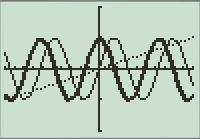
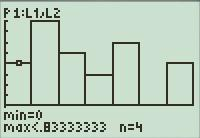
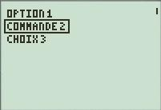
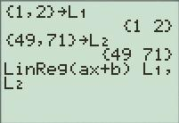
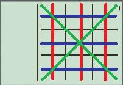

Moi c'est dark link38, et je vais vous apprendre à utiliser l'écran graphique de votre TI ! Pour suivre mon premier tutoriel, vous aurez besoin de :
une TI-82 Stats, TI-83+ ou supérieure ;
quelques connaissances en TI-Basic. Je vous conseille pour cela le tutoriel de Lanfeust 313. Notez que j'utiliserai pour ce big-tuto une TI-83+, ne vous étonnez donc pas si les fonctions sont légèrement différentes des vôtres ;) .
À la fin de ce cours, vous saurez vous servir de l'écran graphique et vous saurez même programmer un jeu qui l'utilise.
Configurez l'écran graphique et apprenez à vous servir des fonctions principales, par exemple pour les mathématiques.
Configurer l'écran graphique
Pour ce premier chapitre, nous allons voir comment configurer l'écran graphique pour pouvoir l'utiliser correctement. Lorsque vous lancez un jeu ou que vous modifiez les paramètres de votre TI, il est courant que vous rendiez impossible l'affichage des fonctions par exemple. Et ça, ce n'est pas bon si vous êtes en interro de maths. Note : dans ce big-tuto, j'utiliserai des images obtenues à partir de Virtual-TI, un programme de Rusty Wagner.
Les paramètres par défaut
Lorsque vous achetez votre TI, celle-ci est configurée d'une certaine façon qui est commune à toutes : on appelle ça les réglages d'usine. Il est très simple de les restaurer, en effet il suffit d'aller dans l'écran de mémoire (2ND:MEM) puis Réinitialiser et enfin Défaut.
Cette réinitialisation aura pour effet de restaurer les réglages d'usine, mais vos programmes et autres fichiers stockés en mémoire ne seront pas touchés.
Nous allons apprendre à quoi servent ces paramètres par défaut.
Les paramètres de FENÊTRE
On accède aux paramètres de fenêtre par la touche WINDOW (FENÊTRE). L'écran suivant s'affiche :
Xmin et Xmax modifient l'ensemble de définition des fonctions affichées sur le graphique. Ainsi, le graphique affichera les représentations graphiques des fonctions sur [Xmin;Xmax].
De même pour Ymin et Ymax, le graphique n'affichera que les points dont l'ordonnée est comprise entre -10 et 10.
Xscl et Yscl modifient la graduation des axes X et Y. Pour Xscl=3, on aura une marque pour chaque multiple de 3.
Enfin, Xres permet de modifier la résolution du graphique. Plus cette valeur est grande, plus l'affichage sera rapide, mais moins la courbe sera précise.
Concrètement, si Xres=8, on aura un seul point calculé au lieu de huit. On laisse donc souvent cette valeur à 1, mais pour une fonction affine on peut évidemment avoir Xres=8, 8 étant le maximum.
Voici l'exemple de la fonction sin(x) affichée avec une résolution de 1 puis de 8 :
Notez que sur ces graphiques, Ymin vaut -2 et Ymax vaut 2. Les autres valeurs sont par défaut.
On peut constater que la seconde est totalement fausse, mais elle aura été affichée 8 fois plus rapidement. C'est donc à vous de trouver un bon compromis entre qualité et fluidité.
Les paramètres de ZOOM
Parfois, vous n'aurez pas besoin de modifier manuellement les paramètres de la fenêtre puisque le menu ZOOM permet de définir des fenêtres déjà configurées.
ZBox est assez utile car il permet de sélectionner sur le graphique le rectangle contenant les points à afficher : sélectionnez le premier point du rectangle puis choisissez le second afin d'avoir la partie de la courbe que vous souhaitez.
Zoom In et Zoom Out, comme leur nom l'indique, permettent de zoomer et de dézoomer sur un point du graphique.
Le ZDecimal permet d'avoir 1 pixel = 0,1 X = 0,1 Y.
Le ZStandard a le même effet que la réinitialisation des paramètres fenêtre.
Le Zinteger permet d'avoir 1 pixel = 1X = 1Y.
Les zooms les plus utilisés sont, comme vous pouvez vous en douter, ZStandard et Zinteger. Dans le chapitre suivant, nous allons aussi utiliser ZoomStat qui permet d'afficher la totalité d'un graphique.
Les paramètres de TABLEAU
Ces paramètres sont accessibles par 2ND:GRAPH. Cette fois, le menu affiché est beaucoup plus simple :
En effet, il n'y a que quatre paramètres : TblStart, c'est la valeur de X affichée en premier dans le tableau. Modifiez cette valeur pour éviter d'avoir à appuyer 30 minutes sur la flèche bas pour atteindre des valeurs importantes de X.
DeltaTbl permet de modifier l'intervalle des valeurs de X affichées dans le tableau. Par exemple, si l'on met ce paramètre à 3, le tableau affichera une valeur de X toutes les 3 unités.
Indpnt permet de choisir entre un affichage automatique ou manuel des valeurs de X. Si vous mettez Ask, vous pourrez rentrer dans le tableau une valeur pour X qui sera calculée automatiquement. Cette fonction est pratique lorsque vous devez trouver des ordonnées éloignées.
Depend, c'est pour choisir entre un affichage automatique ou manuel des valeurs de Y. Si vous mettez Ask, il faudra sélectionner une case de la colonne Y pour afficher la valeur correspondante à X. Cette fonction permet par exemple d'éviter à la calculatrice de calculer inutilement des valeurs dont on n'a pas besoin.
Les paramètres de FORMAT
Vous pouvez accéder aux paramètres de format par 2ND:ZOOM. Vous obtiendrez cette liste de paramètres :
Les options sélectionnées par défaut sont les premières de chaque ligne.
Le paramètre RectGC/PolarGC permet de choisir le type d'affichage des coordonnées. Vous pouvez choisir d'afficher des axes X et Y (abscisses et ordonnées) en sélectionnant RectGC, ou R et THETA si vous sélectionnez PolarGC. Nous ne nous servirons pas de cette dernière option, restez donc sur RectGC.
Pour afficher ou masquer les coordonnées, choisissez entre CoordOn ou CoordOff.
Grid contrôle l'affichage ou non de points placés à chaque graduation de X et Y. On obtient donc une grille.
AxesOn/Off sert à afficher ou non les axes X et Y.
LabelOn/Off permet d'afficher les lettres x et y aux extrémités du graphique. C'est une option peu utile.
Lorsque vous voulez faire une représentation graphique d'une fonction, vous pouvez choisir par ExprOn d'afficher l'équation de la courbe lorsque vous utilisez la fonction TRACE, que nous allons voir plus tard.
Modifier les paramètres
En fonction de ce que vous voulez afficher avec le graphique ou le tableau, vous aurez besoin de modifier les paramètres de ceux-ci.
Nous allons voir dans cette partie à quoi servent ces modifications et comment les effectuer en TI-Basic.
Modifier la FENÊTRE
Comme vous le savez déjà, modifier les paramètres de la fenêtre permet pour l'affichage des fonctions de choisir un ensemble de définition, une graduation et une résolution.
Mais il est aussi possible de modifier ces paramètres via un programme ! Et ça, ça va bien nous aider pour les jeux et les dessins. Si vous avez lu l'introduction du big-tuto, vous devriez savoir créer un nouveau programme, alors allez-y parce que l'on a quelques trucs à tester :p .
Pour commencer, on va apprendre à modifier l'ensemble de définition des représentations de fonctions. Voici ce que l'on va faire :
Alors d'accord, vous auriez pu le trouver tout seul, mais Xmin et Xmax, il faut savoir où les chercher ! En effet, il n'est pas forcément facile de trouver le menu où sont cachées ces variables. Vous devez aller dans VARS-Window... ;) .
Vous trouverez d'ailleurs dans ce menu tous les paramètres de fenêtre que l'on a vus : Xres, Yscl, etc.
Modifier le TABLEAU
Vous avez sûrement déjà eu affaire au tableau de valeurs (que j'appellerai simplement « tableau » dans ce tutoriel, étant donné qu'il n'y a aucun risque de confusion) ; comme son nom l'indique, c'est un tableau qui utilise l'écran graphique pour afficher les valeurs de vos équations en fonction de X.
Appuyez sur la touche TABLE pour l'afficher :
Déjà, vous devez savoir que modifier les paramètres du tableau dans un programme n'est pas utilisé pour les jeux (ou alors c'en est un bien exotique), mais nous allons cependant nous y intéresser un peu, car cela peut toujours être utile dans un programme traitant de matières scientifiques.
Tout comme les variables de fenêtre, on trouve celles du tableau dans VARS-Table.... L'utilisation de ces variables est la même que pour la fenêtre, on stocke une valeur dans la variable et c'est fait.
Notez que vous pouvez afficher le tableau directement dans un programme grâce à la fonction PRGM-I/O-DispTable.
Modifier le FORMAT
Ah, ben là par contre, on a des options vraiment utiles ! Si vous faites un jeu, vous aurez dans la plupart des cas besoin de désactiver les fonctions d'affichage de la TI. Ben oui, un Mario avec les axes X et Y affichés c'est pas terrible je trouve :p .
Et ce qui est bien avec les paramètres de format c'est que c'est ridiculement simple à modifier : on ouvre le menu FORMAT dans un programme, on sélectionne On ou Off pour l'option qui nous intéresse et voilà, l'instruction est ajoutée au programme et il n'y a rien à ajouter dans la ligne ^^ .
Une petite illustration pour vous montrer la simplicité de l'instruction :
Et voilà, au lancement du programme les coordonnées seront masquées et n'apparaîtront pas sur l'écran graphique. Évidemment la méthode est la même pour les autres options de format.
Maintenant que vous savez tout de la configuration de l'écran graphique, on peut attaquer son utilisation ! Bon on reste dans les mathématiques hein, mais le dessin et les jeux arriveront bientôt ^^ .
Fonctions et graphiques
Dans cette partie, axée sur l'utilisation de la calculatrice dans un milieu naturel scientifique, nous allons voir comment nous servir de la TI pour afficher des courbes, des histogrammes et des tableaux, et nous allons apprendre à récupérer les valeurs qui nous intéressent. Cette partie n'est pas utile pour les dessins, vous pouvez donc faire l'impasse s'ils sont votre seul intérêt. Si vous souhaitez programmer un jeu utilisant des statistiques (de score ou je-ne-sais-quoi) ou si vous souhaitez profiter de vos connaissances pour les mathématiques, vous y trouverez un grand intérêt.
Les courbes
Afficher une courbe
L'affichage des courbes est assez simple, il suffit d'entrer l'équation de la courbe et les paramètres de la fenêtre pour qu'elle s'affiche sur l'écran graphique.
Pour entrer l'équation de la droite, on appuie sur la touche Y= (f(x) sur les TI-82 stats.fr). Le menu suivant s'affiche :
Vous pouvez afficher jusqu'à 10 courbes en même temps sur l'écran graphique. Positionnez le curseur après l'un des signes « = » pour écrire l'équation de votre courbe. Pour une équation de type f(x), vous devez appuyer sur la touche [X,T,0,n] pour insérer la variable X. Lorsque vous entrez une équation, le signe « = » de la courbe correspondante est surligné.
Pour désactiver l'affichage d'une courbe tout en gardant en mémoire son équation, vous devez placer le curseur sur ce signe « = » et appuyer sur ENTER.
Voici ce à quoi ressemble l'affichage d'une équation de type sin(x) :
Notez la présence de Plot1, Plot2 et Plot3. Nous y reviendrons plus tard dans la sous-partie « Les graphiques ». Une fois l'équation rentrée, choisissez les paramètres de la fenêtre dans le menu WINDOW comme nous l'avons fait dans le chapitre 1, puis appuyez sur la touche GRAPH pour afficher le graphique.
Si vous êtes en zoom standard, vous devriez obtenir la courbe suivante :
Profitez-en pour choisir des zooms différents et observez les changements.
Modifier l'apparence de la courbe
Lorsque vous affichez plusieurs fonctions sur l'écran graphique, il est possible que vous vous y perdiez un peu : les courbes se superposent et le graphe est vite confus. Prenez par exemple celui-là :
On s'y perd vite dans ces deux sinusoïdes ;) . Maintenant, regardez celui-ci et dites-moi ce que vous en pensez :

C'est mieux, non ? Si vous essayez de suivre une seule courbe du regard, vous vous apercevrez que la lecture du graphique est beaucoup plus facile ^^ .
Nous allons voir comment modifier l'apparence des courbes représentées à l'écran, pour améliorer leur lisibilité.
Commencez par ouvrir le menu Y=. Avez-vous remarqué les lignes continues à gauche des équations ? Je les ai encadrées de rouge sur cette capture d'écran :
Elles permettent de choisir l'apparence des courbes. Pointez une de ces lignes avec le curseur puis appuyez sur la touche ENTER. Vous verrez la ligne devenir plus épaisse ; appuyez encore sur ENTER pour qu'elle se change en triangle plein.
Il y a en tout sept apparences différentes, mais en général on peut les associer deux par deux : certaines se ressemblent beaucoup.
La ligne continue
Le groupe des lignes continues comprend les premières et secondes apparences, à savoir la ligne fine (par défaut) et la ligne épaisse. Regardez sur l'exemple que je vous ai montré tout à l'heure : l'une des sinusoïdes est représentée par un trait fin, l'autre par un trait épais.
Ces deux apparences sont à mon avis les plus utiles car elles permettent de bien différencier deux courbes sans trop surcharger le graphique.
La coloration du graphique
Ce groupe contient les 3e et 4e apparences, dont les icônes sont des triangles rectangles pleins. Voici deux images : la première montre une droite d'équation Y=X représentée avec l'apparence n°3, tandis que la seconde montre cette droite avec la 4e apparence.
Comme vous pouvez le voir, la zone supérieure ou inférieure à la courbe est colorée de lignes verticales. Vous ne voyez peut-être pas l'intérêt d'une telle apparence sur une droite, par contre si vous voulez afficher par exemple le taux de précipitations en fonction du mois de l'année, là ça peut être intéressant : plus c'est noir, plus il a plu dans le mois :) .
Malheureusement/ironiquement, il est impossible d'appliquer une apparence à la courbe d'un graphique créé grâce aux plots ; on peut seulement le faire pour une courbe dont on a entré l'équation dans le menu Y=. Nous verrons donc plus tard pour les précipitations, quand nous étudierons les plots.
Les curseurs
C'est un groupe assez spécial, il comprend les apparences 5 et 6 dont les icônes sont respectivement une ellipse précédée d'un trait et une ellipse simple, que voici :
Ces deux apparences servent à afficher un curseur circulaire sur le point de la courbe qui vient d'être calculé. Le curseur de la première de ces apparences laisse un trait continu derrière lui, tandis que la seconde ne fait qu'afficher le curseur. Cette dernière permet de calculer la courbe sans encombrer le graphique, par exemple pour se donner une idée de la tête de la courbe avant d'utiliser les calculs exécutés. Quant à la première, prenons l'exemple de la fonction exponentielle, d'équation y=e^X. Grâce à l'apparence 5, vous saurez à l'aide du curseur où passe votre courbe :
Comme vous pouvez le voir, cette courbe est presque confondue avec l'axe des abscisses. Sans le curseur, il est difficile de savoir au premier coup d'%u0153il si la fonction exponentielle est indéfinie sur cet intervalle ou si c'est simplement, comme dans notre cas, qu'on la confond avec l'axe des abscisses à cause d'un zoom mal choisi.
Le trait en pointillés
Bon ben là c'est comme pour les traits continus, mais en pointillés :-° ... Je ne vais pas m'attarder trop longtemps sur cette apparence car elle est très simple, regardez sur l'exemple au début : la droite a été représentée avec cette apparence (n°7).
Les fonctions TRACE et CALC sur des courbes
La TI possède quelques fonctions très utiles pour utiliser des courbes. Appuyez sur la touche TRACE. Vous verrez apparaître sur l'écran un curseur assez imposant.
Cette fonction sert à suivre la courbe avec le curseur afin d'observer les valeurs x et y à un endroit précis, en étant certain que le point affiché appartient bien à cette courbe.
Utilisez les flèches directionnelles pour constater les effets : les flèches droite et gauche permettent d'afficher les valeurs de X et Y tout en restant sur la courbe. Un ZInteger (menu ZOOM) peut être dans ce cas très utile pour que les résultats soient lisibles. Les flèches haut et bas, quant à elles, permettent de changer de courbe : le curseur ne suivra plus Y1, mais Y2 par exemple.
Essayez de vous familiariser avec cette fonction car les fonctions CALC l'utilisent très souvent.
Le menu CALC
Le menu CALC (2ND:TRACE) est composé de 7 fonctions très utiles.
La fonction value permet d'obtenir la valeur Y du point appartenant à la courbe choisie et d'abscisse X. Entrez la valeur de X, sélectionnez la courbe avec les flèches haut et bas et vous pourrez lire la valeur Y en bas à droite de l'écran. Notez que si vous rentrez un chiffre lorsque la fonction TRACE est activée, cela aura pour effet d'activer la fonction value, sans avoir à la chercher dans le menu CALC donc.
Les fonctions zero, minimum et maximum s'utilisent de la même façon : choisissez la courbe à étudier (toujours avec les flèches).
La calculatrice vous demandera d'entrer le « left bound » : pour éviter de calculer chaque point de la courbe, vous devez choisir l'intervalle à étudier. Left bound et right bound sont donc les extrémités de l'intervalle à étudier : prenez des points pour lesquels vous êtes certains que le zero, le minimum ou le maximum sont inclus dans l'intervalle.
Vous aurez ensuite un 3e point à choisir, « Guess ». Pour celui-ci, vous devez sélectionner le point de la courbe que vous pensez être le plus proche du résultat. Ce choix n'est pas extrêmement important, mais il permet de raccourcir le temps de calcul.
La fonction intersect permet de trouver le point d'intersection de deux courbes. Sélectionnez la première courbe, puis la seconde et enfin le « Guess ». La calculatrice vous montrera le point d'intersection de ces deux courbes le plus proche de votre point Guess.
dy/dx renvoie tout simplement la dérivée de la fonction en un point sélectionné.
La 7e fonction permet de calculer l'intégrale de la fonction sur intervalle donné. De plus, sont « remplis » de noir les points compris entre l'axe X et la courbe, dans l'intervalle choisi. Voyez plutôt :
Le menu CALC est donc très utile, en mathématiques particulièrement.
Les tableaux
Les tableaux ne sont a priori pas utilisés dans les jeux. Pour afficher un tableau, il faut rentrer l'équation dans Y= (comme pour les courbes) puis appuyer sur 2ND:GRAPH.
Dans la colonne Y1, on lit la valeur de f(x) pour le x affiché sur la même ligne. Notez que le tableau peut afficher plusieurs équations à la fois pour le même X.
Pour récupérer f(x) sans passer par le tableau, on peut utiliser l'instruction Y1(x), par les menus VARS-YVARS-Function...-Y1. Entrez ensuite la valeur de x entre parenthèses pour que la fonction renvoie f(x).
Les graphiques
Les graphiques sont de très bons outils pour visualiser des statistiques. Pour afficher un graphique, il faut ouvrir le menu Y= et activer un des Plots.
Désactivez vos courbes en sélectionnant les signes « = » de chaque courbe ; vous devriez obtenir l'écran suivant :
Ouvrez ensuite le menu de graphiques par 2ND:Y=. Sélectionnez Plot1, voici ce que vous devez avoir :
Assurez-vous que le graphique est activé en sélectionnant On, puis choisissez le type de graphique que vous voulez. Dans cet exemple, nous utiliserons l'histogramme (3e sur la première ligne dans les types).
Configurez l'écran graphique de façon à avoir Xmin = 0. De cette façon, seule la partie occupée par l'histogramme sera affichée. Si les valeurs de votre graphique ne peuvent pas être négatives, mettez aussi Ymin à 0 afin de limiter l'espace inutilisé.
Dans Xlist, vous devez mettre la liste contenant les abscisses des barres à afficher.
Dans freq, écrivez la liste contenant les valeurs pour chaque X. Ainsi, si l'on a L1={1,2,3,4,5,6} et L2={10,5,6,8,9,1}, et que l'on met respectivement L1 et L2 dans Xlist et freq, on obtient l'histogramme suivant :
Les différents types de graphiques s'utilisent de la même façon, essayez en particulier la courbe (le second de la première ligne). C'est le plus important avec l'histogramme.
Si vous souhaitez afficher votre graphique de façon simple, sans trifouiller les paramètres fenêtre, vous pouvez utiliser le ZoomStat (les zooms sont tous dans le menu ZOOM). Celui-ci permet d'adapter la fenêtre à votre graphique afin de l'afficher en entier.
Cependant, son utilisation est déconseillée pour les histogrammes car on a parfois droit à des trous dans le graphique : certaines barres ne sont pas affichées car l'axe X ne correspond pas aux valeurs entrées dans Xlist. Regardez sur cette image :
Comme vous pouvez le constater, il n'y a pas de 0 dans la liste Freq, pourtant la 6e colonne est vide : la valeur de L2(6) est affichée dans la 7e. La 6e a donc été sautée. Nous allons examiner de plus près la cause de ce problème avec la fonction TRACE.
La fonction TRACE sur un graphique
Affichez le même graphique que sur l'image précédente : copiez les valeurs de L1 et L2, réglez le Plot1 de la même façon que sur l'image d'avant : On, histogramme, L1, L2. Allez ensuite dans le menu ZOOM et choisissez ZoomStat. Vous devriez avoir la même chose à l'écran.
Maintenant, activez la fonction TRACE en appuyant sur la touche du même nom : comme pour les courbes, un curseur est affiché en même temps que des valeurs : min, max, et n :

Déplacez un peu le curseur : vous verrez qu'il suit le graphique en s'arrêtant sur le milieu de chacune des colonnes, tout en affichant les valeurs relatives à la colonne pointée.
n, c'est la valeur que vous avez rentrée dans L2, la liste Freq. Elle change donc en fonction de x. Quant à min, c'est la valeur de la première abscisse de la colonne pointée. max est la valeur de la dernière.
Cela signifie que pour 0<x<8,33..., on a n=4. Ce n'est pas ce que l'on veut : on voulait 0<x<1, car 0 et 1 sont les valeurs que l'on a entrées dans L1 !
Cependant, ZoomStat voit les choses autrement : il divise la taille de l'écran par le nombre de colonnes à afficher. On n'obtient donc pas ce que l'on voulait.
Si vous avez bien suivi, vous devriez avoir compris pourquoi la 6e colonne est vide : utilisez la fonction TRACE pour afficher les données relatives à cette colonne. Vous obtenez l'écran suivant :
La variable n de cette colonne contient les effectifs pour 4,167 <= x < 5. Nous avons des effectifs pour 4, d'autres pour 5, mais entre les deux il n'y a rien !
Et à cause de la façon dont ZoomStat configure la fenêtre, cette colonne est affichée même si on ne l'a pas définie. C'est la raison pour laquelle il vaut mieux configurer « manuellement » la fenêtre lorsque l'on affiche un histogramme.
Par contre, pour l'affichage d'autres graphiques comme les courbes, il n'y a pas le moindre problème et l'utilisation de ZoomStat rend les choses plus faciles ;) . Je vous conseille donc d'utiliser ZoomStat tout le temps, sauf dans le cas d'un histogramme ou d'un autre type de graphique utilisant une liste freq.
Une dernière chose : la liste freq ne peut pas contenir de valeurs inférieures à 0, donc si vous voulez afficher un graphique dont les valeurs peuvent être négatives, un bilan financier par exemple, vous devrez utiliser un type de graphique qui utilise la mention « Ylist » à la place de « Freq ». La courbe est particulièrement adaptée à ce genre de cas.
Bilan : créer un graphique dans un programme
Maintenant que nous avons vu comment configurer l'écran et afficher manuellement des graphiques, nous pouvons passer à l'étape suivante : l'écriture d'un programme permettant d'afficher un graphique à partir des données entrées par l'utilisateur.
Préparation
Le but du programme est d'afficher un graphique élaboré à partir de données entrées par l'utilisateur. Voici l'ordre dans lequel nous allons programmer.
D'abord, on va demander à l'utilisateur la quantité de données qu'il veut stocker : par exemple si son axe X représente les mois de l'année, cette quantité sera 12. Il y aura autant de données pour l'axe X que pour les effectifs (Y), sinon on ne peut pas établir un graphique complet :) ! Inutile donc de lui demander une fois pour les X et une autre pour les Y.
Une fois que cette quantité sera rentrée, on utilisera une boucle For pour lui demander chacune des valeurs à rentrer.
On lui demandera ensuite le type de graphique à afficher.
Enfin, on affichera le graphique qu'il a demandé ;) .
Je vous laisse dix secondes de repos, revenez TI en mains. (...) Bien, nous pouvons commencer à coder ce programme !
Présentation et gestion des données
Notre première mission est de demander à l'utilisateur le nombre de données à stocker pour chaque axe. Pour cela, il faut lui expliquer le but du programme et bien lui faire comprendre ce que l'on attend de lui ;) .
Vous pouvez écrire absolument ce que vous voulez dans la présentation du programme. D'ailleurs, si celui-ci n'est destiné qu'à vous, il est inutile d'expliquer le but du programme, à moins que vous ne le dépoussiériez trois ans après l'avoir écrit :p !
Voici ce que j'ai écrit pour la présentation de mon programme :
:ClrHome
:Disp "ENTREZ LES","DONNEES DU","GRAPHIQUE POUR","QU'IL SOIT CREE","AUTOMATIQUEMENT
:Pause
:ClrHome
On utilise donc tout simplement un Disp pour afficher cette information. Ensuite, une pause pour demander à l'utilisateur d'appuyer sur ENTER, puis on efface l'écran.
Note : pour l'apostrophe, j'ai utilisé le caractère du menu ANGLE (2ND:APPS).
Après cette courte mais suffisante explication sur l'utilité du programme, nous allons demander à l'utilisateur de rentrer le nombre de données qu'il souhaite voir apparaître sur le graphique.
Pour cela, un simple Input suffira. Avant, on indique quand même avec un Disp ce que l'on veut que l'utilisateur rentre.
On définit par la même occasion la dimension des listes L1 et L2, qui est la même, comme on l'a déjà expliqué ;) .
Gestion des données number 2
Maintenant que l'on connaît la quantité d'informations à stocker, nous pouvons demander à l'utilisateur quelles sont ces informations. Autrement dit, on va le faire rentrer toutes ces valeurs une par une :diable: .
Quoique (un peu de bonté dans ce monde de brutes), finalement il ne sera pas nécessaire de rentrer les abscisses une par une : l'utilisateur entrera l'intervalle entre deux valeurs de X ainsi que l'abscisse de départ. À partir de là, nous pourrons calculer chacune des abscisses que l'on veut.
Pour cela, une boucle for fera très bien l'affaire : L1(1) contiendra la valeur de départ, L1(2) aura la valeur de L1(1) à laquelle on aura ajouté l'intervalle I, et ainsi de suite.
Voici comment j'ai codé cette partie du programme :
On fait donc une boucle For allant de 1 à N. À chaque boucle, une nouvelle case de la liste L1 est remplie. On y stocke la valeur de départ à laquelle on aura ajouté (Z-1) fois l'intervalle I. Ainsi dans la première case de L1, c'est-à-dire L1(1), on a D+I(1-1). Cela revient à dire que L1(1) vaut D. Dans le cas des cases suivantes, on ajoute à chaque fois I.
Lorsque vous codez des formules de ce genre, il vaut mieux vérifier qu'elles marchent correctement avant de continuer. Exécutez donc le programme, puis vérifiez les valeurs contenues dans L1.
La liste commence bien à 0, et on a bien un intervalle de 10.
On ne le voit pas sur la capture d'écran, mais la liste comporte 6 nombres, comme je l'ai demandé dans le programme. Ces valeurs ne sont pas toutes affichées, il aurait fallu appuyer sur la flèche droite pour faire défiler la liste.
S'il y a un problème à ce niveau-là dans votre programme, il faut vérifier le contenu de vos boucles for ;) .
On a donc notre première liste qui contient chacune des abscisses qui nous intéressent. On passe à la suite.
On va utiliser une boucle for pour demander chacune des valeurs jusqu'à ce que l'on ait atteint la quantité d'informations désirée. Ainsi, nous aurons toutes les valeurs nécessaires pour la création du graphique.
Cette partie du code est encore plus simple que la précédente, voici la façon dont je l'ai écrite :
Comme tout à l'heure, on vérifie que ça marche correctement ;) !
Choix du type de graphique
On continue, maintenant il faut que l'utilisateur puisse choisir quel type de graphique il veut : nous allons mettre les trois principaux, à savoir la courbe, le nuage de points et l'histogramme. Les trois sont sur la première ligne dans les types de graphique.
Le plus simple pour demander ça à l'utilisateur, c'est de faire un menu. Et puis, vous pourrez toujours le compléter avec les trois autres types de graphiques plus tard, bien que je n'y trouve personnellement pas d'utilité.
Pour ce menu, j'ai choisi les labels A, B et C (on ne va pas se compliquer la vie :p ). Ah oui, je mets toujours un « quitter » ou « retour » dans mes menus. J'avoue que là ça ne sert pas à grand chose mais bon, je trouve que c'est une bonne habitude à prendre ^^ .
Voici donc notre menu :
:Menu(" TYPE GRAPHIQUE ","NUAGE POINTS",A,"COURBE",B,"HISTOGRAMME",C,"QUITTER",Q
C'est un menu tout bête. On va coder tout de suite le label Q, comme ça ce sera fait.
:Lbl Q
:ClrHome
:Output(1,1,"
:Return
La ligne :Output(1,1," permet d'empêcher l'apparition du message « done » lorsque le programme se termine. Cette ligne n'est pas indispensable, mais c'est quand même plus esthétique.
Le Return permet de terminer le programme s'il a été exécuté directement, et de retourner au programme parent s'il a été exécuté à partir d'un autre programme. Comme ça, vous pourrez vous servir de ce programme sans changer son contenu si vous avez besoin un jour de l'appeler dans un autre programme.
Maintenant, nous allons nous occuper des labels A et B. La configuration de ces graphiques sera très simple. Pour configurer un Plot, il faut suivre la syntaxe suivante : Plot1(type,liste1,liste2,marque).
L'instruction Plot1(, les types de graphiques et les marques différentes sont disponibles dans le menu STAT PLOT (2ND:Y=). Vous remarquerez que le contenu de ce menu n'est pas du tout le même en dehors et dans un programme.
Une fois que le graphique est configuré, on utilise le ZoomStat pour afficher le graphique et configurer la fenêtre en même temps.
Ainsi, pour notre nuage de points, on écrira :
Pour terminer chaque label, nous mettrons un Goto Q pour terminer le programme : il ne faudrait pas que l'on affiche les trois types de graphique à la suite ^^ .
Pour le label B, c'est exactement pareil :
Seuls le type de graphique et la lettre du label changent.
Nous avons terminé l'affichage de la courbe et du nuage de points. Pour l'histogramme, c'est un peu plus compliqué, car on ne peut pas se servir du ZoomStat, comme nous l'avons vu dans le chapitre précédent. Nous allons donc configurer la fenêtre en fonction des listes que nous avons.
Pour configurer la fenêtre, nous avons besoin de :
Xmin et Xmax : ce sont les extremum de L1 ;
Xscl : c'est tout simplement l'intervalle que l'utilisateur a choisi ;
Ymax : c'est la valeur maximum de L2 ;
Ymin : cette valeur vaut 0 : il est très rare d'avoir besoin d'une origine différente, et les effectifs ne peuvent pas être inférieurs à 0 avec les histogrammes ;
Yscl : pour cette valeur, on va prendre la partie entière de Ymax divisée par 10, ça permettra d'avoir un bon aperçu ;
Xres : ben là, on va mettre 1, tout simplement ^^ . Nous n'avons pas besoin d'une grande rapidité pour ce programme, donc c'est le meilleur choix.
C'est parti ! On vient de voir ce qu'il faut mettre dans les valeurs de la fenêtre, maintenant il ne reste plus qu'à transformer ça en TI-Basic ;) !
Tout d'abord, on n'a pas mis de type de marque dans les paramètres de Plot1. C'est parce que, comme nous l'avons déjà dit, l'histogramme ne nécessite pas de type de marque.
Pour ce qui est des réglages fenêtre, nous venons de voir à quoi correspondaient ces valeurs. Je vous rappelle que les variables de fenêtre sont accessibles par VARS-Window...
Quant aux instructions min et max, vous pourrez les trouver dans 2ND:STAT-MATH. DispGraph permet d'afficher l'écran graphique.
Et nous avons fini :p ! Enfin non, pas tout à fait...
Anticipation des éventuels problèmes
Notre programme est tout beau tout neuf ! Et il marche :D ! Seulement voilà, ce n'est pas toujours le cas...
De nombreux problèmes peuvent survenir dans notre programme selon la configuration de votre TI.
Par exemple, si l'utilisateur a huit courbes activées dans son menu Y=, vous pensez que le graphique sera satisfaisant ? C'est ce genre de problèmes que nous allons résoudre dans cette sous-partie.
Commençons !
Les Pause
Vous l'avez sûrement remarqué si vous avez essayé votre programme : il manque des Pause ! Vous allez me faire le plaisir de rajouter un Pause avant chaque Goto Q !
Maintenant, l'utilisateur peut admirer son graphique sans avoir besoin d'appuyer sur la touche GRAPH.
Affichage de l'histogramme
Pour le moment, l'histogramme n'est pas affiché complètement sur l'écran graphique : la dernière colonne est en dehors de l'écran.
En effet, nous avons mis Xmax à la valeur maximale de L1. Et étant donné que les effectifs sont représentés par des rectangles, on ne voit que la première ligne de celui-ci à l'écran ! Regardez sur cette image, sachant que normalement l'histogramme devrait comporter six colonnes :
La première ligne, c'est l'axe Y. Tout va bien donc.
Par contre, la ligne de droite, c'est la première ligne de pixels de la 6e colonne ! Il faut donc rajouter de la place à droite pour afficher le graphique entièrement.
Combien de place ? Eh bien, la place que prend une colonne, c'est-à-dire I : l'intervalle entre deux abscisses. On modifie donc la ligne :max(L1)->Xmax par :
:max(L1)+I->Xmax
Et là, notre histogramme est affiché parfaitement.
Fonctions et plots
Nous devons absolument désactiver l'affichage des fonctions et des plots 2 et 3 pour que le graphique soit correct.
Pour cela, retournons au début de notre programme. Nous allons rajouter quelques lignes de code tout au début pour désactiver ces représentations.
Les instructions qui nous intéressent sont FnOff et PlotsOff. FnOff se trouve dans le menu VARS-YVARS-On/Off et PlotsOff dans 2ND:Y=.
Ces fonctions prennent comme paramètres les numéros des fonctions ou plots à désactiver. Si l'on ne met aucun paramètre, elles désactivent toutes les fonctions ou tous les graphiques.
Pour FnOff, c'est ce que nous voulons : nous allons donc écrire FnOff sans paramètre, au début du programme.
Par contre, nous ne voulons pas désactiver le Plot1. On pourrait par conséquent écrire PlotsOff 2,3, mais ce n'est pas ce que nous allons faire.
En effet, le Plot1 est automatiquement activé lorsqu'on le définit par Plot1(). C'est donc tout simplement PlotsOff sans paramètre que nous allons mettre dans notre programme.
Les paramètres de FORMAT
Vous vous rappelez du premier chapitre sur les paramètres FORMAT ? Nous allons nous y intéresser de plus près.
En effet, si l'utilisateur a désactivé les axes ou activé la grille, le résultat risque de ne pas être très joli ^^ .
Toujours dans le début du programme, on va ajouterAxesOn et GridOff. Les autres paramètres de format ne nous intéressent pas : le graphique ne changera pas selon ces derniers.
À propos de TRACE
Il faut bien l'avouer, notre graphique est tout à fait correct :p .
Cependant, il est particulièrement dommage que l'utilisateur ne puisse pas voir la légende et les valeurs de son graphique. C'est pourquoi nous allons enclencher pour lui la fonction TRACE, afin qu'il puisse récolter toutes les informations dont il a besoin !
Après chaque ZoomStat et après le DispGraph, et avant les Pause, vous allez m'ajouter l'instruction Trace ! Pour cela, il suffit d'appuyer sur la touche TRACE dans votre programme ;) .
Le code final
Après ajout de toutes ces corrections, voici le code final !
Et voici les trois graphiques que l'on obtient pour six données par axe, un départ des X de 0 avec intervalle de 10, et pour valeurs 2,4,8,9,8,1 :
Hé ben, moi je dis que pour un premier programme en écran graphique, c'est un beau programme en écran graphique ^^ !
Je parie que si vous aviez vu ce code dès le départ vous auriez abandonné ; quand je vous dis qu'il faut réfléchir à un programme et le coder par petits bouts ! Et c'est encore mieux si vous y êtes arrivé tout seul (ou quasiment, vous ne pouviez pas inventer la syntaxe de Plot1() par exemple).
D'ailleurs si vous avez un problème quelque part, si vous ne savez pas à quoi sert une fonction ou comment l'utiliser, je vous conseille de jeter un coup d'oeil à la documentation, elle est vraiment complète ! Vous pouvez télécharger cette documentation par ici. Choisissez votre type de TI, sélectionnez français dans le menu de droite puis cliquez sur le lien de téléchargement :) .
Enfin bref, maintenant que vous maîtrisez la configuration de la fenêtre, du graphique, du tableau, des fonctions, du format, que vous savez utiliser GRAPH, TRACE, CALC, ZOOM, Y=, STAT PLOT, TABLE, et que vous vous êtes rafraîchi la mémoire quant au TI-Basic (on a bien bossé mine de rien ^^ ), nous pouvons passer à la partie suivante !
J'aurais bien voulu ne pas mettre de QCM pour cette fin de partie, mais c'est plus fort que moi, et on a quand même appris des trucs dans ce chapitre, il va falloir vérifier que vous avez bien retenu tout ça :diable: ! On se revoit dans la seconde partie... peut-être...
La première partie est terminée ! Vous pouvez oublier les fonctions et les histogrammes un petit moment, maintenant ce n'est que du dessin. ;)
Apprenez à dessiner sur votre écran graphique manuellement et en TI-Basic.
Le dessin
Pour commencer cette seconde partie sur le dessin, nous allons étudier les différentes fonctions disponibles pour vous aider à dessiner facilement.
Ces fonctions se divisent en trois groupes et la plupart peuvent être utilisées sur l'écran graphique et en TI-Basic.
Pour dessiner, nous allons utiliser un écran vide : désactivez donc toutes les fonctions de format. Pour les réglages de la fenêtre, j'ai l'habitude de mettre Xmin à 0, Xmax à 94, Ymin à -62 et Ymax à 0 (1 pixel pour 1 unité).
Mettre les Y en négatif permet d'avoir le même système de coordonnées que sur... Paint. :p On peut donc dessiner sur Paint pour avoir un aperçu puis recopier les coordonnées des lignes, des cercles (...) en ajoutant simplement le signe « - » aux Y.
Draw : les fonctions
Le menu draw est accessible depuis 2ND:PRGM. Il contient trois sous-menus : draw, points et sto.
Le sous-menu draw contient les fonctions les plus importantes pour le dessin. Celles-ci permettent par exemple de tracer des lignes, des cercles...
ClrDraw
ClrDraw (EffDessin en français) permet d'effacer l'écran graphique. Attention : les axes et les autres paramètres de fenêtre ne seront pas effacés si vous les avez activés.
Line(
La fonction Line( permet de tracer une ligne.
Sur l'écran graphique, il suffit de sélectionner les deux extrémités de la ligne. En TI-Basic, la fonction est utilisée comme Line(X1,Y1,X2,Y2), (X1;Y1) étant les coordonnées du point 1 et (X2;Y2) celles du point 2.
En écrivant Line(X1,Y1,X2,Y2,0) avec le 0 à la fin, on efface tous les points appartenant à cette ligne.
Horizontal et Vertical
Horizontal Y et Vertical X permettent de tracer une ligne horizontale ou verticale sur tout l'écran graphique, avec X et Y les abscisses ou ordonnées de cette ligne. Sur l'écran graphique, on sélectionne l'endroit où l'on veut placer sa ligne horizontale ou verticale.
Circle(
Cette fonction permet de tracer des cercles.
Sur l'écran graphique, on sélectionne le centre du cercle, puis un des points du cercle (on trace son rayon). En TI-Basic, on utilise cette fonction comme suit : Circle(X,Y,R) où (X;Y) sont les coordonnées du centre du cercle et R son rayon.
Text(
La fonction Text( permet d'afficher du texte sur l'écran graphique. La police n'est pas la même que sur l'autre écran : un caractère prend 5 pixels de hauteur et 3 de largeur, sauf certains caractères, comme l'espace qui prend 5x1 pixels.
Voici la plupart des caractères utilisés, à l'échelle 2:1 :
Sur l'écran graphique, il suffit de positionner le curseur à 1 pixel au-dessus de l'endroit où l'on veut écrire du texte, puis de taper directement le texte à afficher. En TI-Basic, on écrit du texte par la fonction Text(Y,X,"texte"). Notez que, comme pour Output, les Y sont en premier. Vous pouvez aussi concaténer les chaînes à afficher. Par exemple, Text(Y,X,"TU AS ",L," POINTS") affichera, si L=5 : TU AS 5 POINTS.
Pen
L'outil pen (stylo sur les calculatrices françaises) n'est utilisable que sur l'écran graphique ; on ne peut donc pas s'en servir dans un programme.
Pour l'utiliser, on place le curseur à l'endroit où l'on veut commencer à dessiner, et on appuie sur ENTER pour activer le stylo. Une fois activé, il suffit de déplacer le curseur pour noircir le point survolé. Il faut appuyer à nouveau sur ENTER pour désactiver le stylo.
Points : le pixel par pixel
Les fonctions de dessin point par point permettent d'effacer ou de modifier des points facilement. Elles sont accessibles par le sous-menu 2ND:PRGM-POINTS.
Comme vous pouvez le constater, ces fonctions sont divisées en deux groupes : les points et les pixels. Par point, il faut comprendre point du graphique. Par conséquent, si vous voulez afficher un point au milieu de l'écran et que vous utilisez Pt-On, les paramètres à utiliser seront différents en fonction des réglages de la fenêtre.
En revanche, pour les pixels, peu importent vos réglages, le point sera toujours au même endroit si vous utilisez une même instruction.
La grande différence entre ces deux groupes, c'est que les fonctions de pixels ne sont utilisables qu'en TI-Basic, contrairement aux points qui le sont aussi directement sur l'écran graphique.
Les fonctions Pt
Sur l'écran graphique, l'utilisation des fonctions Pt est très simple : il suffit d'appuyer sur ENTER lorsque l'on veut activer, désactiver ou inverser un point.
En TI-Basic, ce n'est pas beaucoup plus compliqué, mais on a droit à des options : il faut juste indiquer les coordonnées du point à travailler, puis le type de point à afficher, comme vous pouvez le voir sur l'illustration suivante :
L'utilisation des autres fonctions Pt est la même. Pour ceux qui ne l'auraient pas compris, Pt-change permet d'inverser un point : s'il est activé, on le désactive, et s'il est désactivé, on l'active. C'est aussi simple que ça.
Les fonctions Pxl
Vous avez sûrement remarqué qu'il y a une fonction Pxl de plus par rapport aux fonctions Pt : pxl-Test. Les plus perspicaces d'entre vous auront compris que cette fonction permet de savoir si un pixel est noir ou non.
La fonction renvoie 1 si le pixel est noir et 0 s'il est blanc.
Il y a une seconde différence majeure entre les fonctions Pt et Pxl : les fonctions Pxl ont pour syntaxe (Y,X) tandis que les Pt sont utilisées comme (X,Y).
À part ces quelques points spéciaux, le fonctionnement est le même que pour tout le reste :
Ce pxl-Test peut vous être très utile ou totalement futile ; tout dépend de la façon dont vous programmez.
Sto : l'utilisation des images
Ah, là on rentre dans le vif du sujet. Vous ne voudriez pas que votre beau dessin soit effacé, ni que vous ne puissiez rien en faire ! Il faut donc sauvegarder votre image.
StorePic
Accessible depuis 2ND:PRGM-STO, la fonction StorePic vous permet d'enregistrer jusqu'à 10 images sur votre calculatrice. Pour l'utiliser, il suffit de rajouter le numéro de fichier dans lequel vous souhaitez l'enregistrer. Vous pouvez donc écrire StorePic 0, StorePic 1, jusqu'à 9.
Voilà, votre image est enregistrée et vous ne risquez plus de l'effacer par erreur. Attention quand même, car une image utilise 767 octets (et ce quelque soit l'image) et sur 24Ko de RAM, ça fait quand même pas mal !
D'ailleurs puisqu'on en parle, n'oubliez pas que si vous avez une TI83+ ou supérieure, vous pouvez archiver vos programmes, images, etc. dans la mémoire ARC de la TI (sur TI-83, c'est environ 160Ko, donc tout de suite on peut stocker plus de choses ^^ ). Pour cela, vous devez aller dans 2ND:+, MEMMgmt/Del et choisir le type d'objet à archiver. Appuyez ensuite sur ENTER pour archiver le fichier pointé.
Les objets archivés ne peuvent pas être utilisés. Ils sont simplement stockés en mémoire pour une utilisation ultérieure. Pour les réutiliser, il faut les désarchiver, dans le même menu et de la même manière que précédemment. Appuyer sur ENTER sur un fichier archivé le désarchivera.
RecallPic
La fonction RecallPic permet d'afficher une image sauvegardée. L'image est affichée par dessus les points déjà existants sur l'écran graphique. Si ce n'est pas ce que vous souhaitez, faites un ClrDraw. ;)
Pour rappeler une image, vous devez, comme pour StorePic, entrer le numéro de l'image en question. Si vous avez écrit StorePic 1, il faudra utiliser RecallPic 1 pour afficher cette image. Essayer de rappeler une image non existante aura pour effet d'afficher un beau ERR:UNDEFINED vous signalant que celle-ci n'existe pas.
StoreGDB et RecallGDB
Ces deux fonctions permettent respectivement d'enregistrer et de rappeler les réglages de l'écran graphique, que l'on appelle Base de Données de Graphe. Un GDB prend 124 octets et, personnellement, je préfère modifier chaque paramètre grâce à un programme, c'est moins volumineux.
En effet, un GDB contient plusieurs données qui ne sont que rarement utiles. Il est composé des réglages de MODE (que l'on n'a pas vu : ce n'est pas ou très peu du domaine du graphique), WINDOW, FORMAT, Y= et PLOT.
Dans ce chapitre, nous avons vu la grande majorité des fonctions de dessin ; nous pouvons donc attaquer l'utilisation de ces fonctions dans un programme !
Utiliser le dessin dans un programme
Nous avons vu comment dessiner en TI-Basic et sur l'écran graphique, mais vous n'imaginez pas ce que l'on peut faire avec quelques variables pour paramètres de ces fonctions : on approche de plus en plus de la programmation du RPG !
D'ailleurs, vous avez déjà les connaissances pour faire la plupart des jeux (bon dans les limites de la TI bien sûr, mais la quasi-totalité des jeux 2D sont réalisables sur TI). Dans ce chapitre, nous n'allons voir que des exemples concrets de ce que nous avons déjà appris !
Les plus courageux d'entre vous peuvent essayer de programmer un morpion avant de continuer le tutoriel, et si vous y arrivez croyez-moi vous avez tout compris ^^ .
À la fin de ce chapitre, tout le monde devrait être capable de faire un morpion. Allez hop, un petit TP pour le prochain chapitre !
Un menu sur l'écran graphique
Jusque là, on n'utilisait quasiment que ce qu'on a appris dans ce big-tuto. Maintenant, on va voir comment utiliser l'écran graphique avec ce que l'on connaissait déjà, c'est-à-dire tous les points énoncés par Lanfeust 313 dans son tutoriel.
Alors pour ceux qui n'auraient pas suivi, j'ai l'habitude de définir mon écran graphique avec Xmin=0; Xmax=94; Ymin=-62; Ymax=0. Ne vous étonnez donc pas si mes ordonnées sont négatives.
D'ailleurs je vous conseille de faire pareil, au moins pendant ce big-tuto, ça vous évitera quelques problèmes de compréhension et vous pourrez toujours utiliser vos propres réglages après ;) .
Prenez bien soin de mettre chaque option de FORMAT sur OFF et de désactiver chacune des courbes et chacun des graphiques dans Y=.
C'est fait ? On peut commencer ^^ .
Affichage des options dans le menu
Je vous explique ce que l'on veut faire :
On affiche des options précédées d'un numéro.
Lorsque l'utilisateur appuie sur 1, 2 ou 3 (getKey(codeTouche en français), vous vous souvenez ?), le programme enregistre son choix et affiche l'option choisie.
Ensuite, une petite pause, puis on efface l'écran graphique et on affiche l'écran principal.
Alors pour afficher ces options, c'est très simple, et nous venons de l'apprendre ! On va utiliser la fonction Text.
Il n'y a pas besoin d'une grande réflexion pour savoir ce que l'on doit écrire, il faut juste se souvenir que les Y viennent avant dans la fonction Text :
Je suppose que vous vous souvenez que les parenthèses, guillemets et autres décorations ne nécessitent pas leur fermeture ; celle-ci est automatique et cela permet d'utiliser moins de mémoire.
En programmation, on essaie en général de coder proprement, mais là on a moins de 24 Ko disponibles alors le purisme on n'en a pas grand chose à faire ! :p
Sur un gros programme, le fait de ne pas fermer les parenthèses et les guillemets réduit énormément la mémoire requise. Chaque caractère en moins est important.
Gestion de l'appui sur une touche
Une fois les options affichées, l'utilisateur doit appuyer sur une touche. Oui mais pas n'importe laquelle, il doit appuyer sur les touches 1, 2 ou 3.
Les codes de ces touches sont respectivement 92, 93 et 94 : ce sont des suites. On peut donc établir un rapport entre le numéro de la touche et son code : en effet, le numéro de la touche est égal au code moins 91 : 94 - 91 = 3 : on affiche la commande 3.
Alors évidemment, ça ne marche pas forcément si on utilise d'autres touches, mais il y a quasiment toujours une équation permettant de raccourcir le code, et donc d'utiliser moins de mémoire.
Par exemple si l'on veut gérer la touche 4, on rajoutera une condition : si le code touche est compris entre 92 et 94, on soustrait 91, s'il est compris entre 82 et 84, on soustrait 78. Le gain de mémoire est moins évident, mais il est là ;) . En plus, cela accélère l'exécution du programme : par rapport au « If G=92, If G=93 » et ainsi de suite, il y a des conditions, certes, mais il y en a moins. Et un jeu rapide, c'est un jeu qui n'ennuie pas son utilisateur ^^ .
On va donc mettre en pratique ce que l'on vient de voir. Après avoir affiché les options, le code est le suivant :
:Repeat G>91 and G<95
:getKey->G
:End
:G-91->D
:Text(18,0,"TU AS CHOISI LE ",D
:Pause
:ClrDraw
:Disp
Nous avons déjà expliqué ce code. Tant que l'utilisateur n'appuie pas sur 1, 2 ou 3, le programme attend la pression d'une touche. Ensuite, on affiche le numéro de l'option correspondante.
Il n'était pas nécessaire d'utiliser deux variables (on aurait pu faire :G-91->G), mais cela permet dans cet exemple de bien différencier chaque affectation.
Notez la concaténation à la ligne 5 : c'est un procédé aussi utile qu'important qui vous permettra de gagner temps, mémoire et souvent esthétique par rapport à l'utilisation de deux instructions Text à la suite.
Un menu plus esthétique
Dans la sous-partie précédente, nous n'avons utilisé que la fonction Text pour ce qui est du graphique. Ici, on passe au niveau supérieur. On souhaite un rendu bien plus esthétique, voici ce que l'on doit avoir :

Comme vous pouvez le voir, en appuyant sur les flèches haut et bas, l'utilisateur choisit directement l'option qu'il souhaite puis appuie sur ENTER. Nous allons donc créer un curseur, ou plutôt un focus, appelez-le comme vous voulez :p .
Pour cela, nous aurons besoin d'une variable. Celle-ci a pour valeur le numéro de l'option survolée. On affichera un cadre (composé de quatre lignes) autour du texte survolé, les instructions Line auront donc la variable dans leurs paramètres.
Ensuite, l'utilisateur doit appuyer sur ENTER, flèche haut ou flèche bas. Ces deux dernières touches ne seront actives que si l'option survolée n'est respectivement pas la plus haute et la plus basse : on ne pourra pas donner à la variable une valeur qui ne correspond à aucune option, sinon le cadre entourerait du vide :-° ...
Une fois que l'utilisateur a appuyé sur l'une de ces touches actives, le cadre est supprimé grâce à la fonction Line(X1,Y1,X2,Y2,0). En fait, les paramètres de cette fonction, appelée quatre fois (une par côté du cadre), sont les mêmes que pour l'affichage, on rajoutera simplement un 0.
Si l'utilisateur appuie sur flèche haut ou flèche bas, on modifie la valeur de la variable pour que le prochain cadre créé le soit autour de la nouvelle sélection.
Essayez de programmer ce menu sans mon aide, vous pouvez y arriver ;) .
Si vous préférez comprendre sans chercher par vous-même (je suppose que vous êtes au courant que c'est un mauvais choix), voici la façon dont j'ai codé ce menu :
:ClrDraw
:Text(2,2,"OPTION 1
:Text(10,2,"COMMANDE 2
:Text(18,2,"CHOIX 3
:1->D
:Repeat G=105
:Line(0,7-8*D,0,-1-8*D
:Line(0,-1-8*D,40,-1-8*D
:Line(40,-1-8*D,40,7-8*D
:Line(40,7-8*D,0,7-8*D
:Repeat G=105 or (G=25 and D>1) or (G=34 and D<3
:getKey->G
:End
:Line(0,7-8*D,0,-1-8*D,0
:Line(0,-1-8*D,40,-1-8*D,0
:Line(40,-1-8*D,40,7-8*D,0
:Line(40,7-8*D,0,7-8*D,0
:D-(G=25)+(G=34)->D
:End
:Text(40,0,"TU AS CHOISI LE ",D
:Pause
:ClrDraw
:Disp
Ah ouais, ça rigole plus là :D ! En fait, tout ce qu'il y a de nouveau, ce sont les huit lignes d'instructions Line.
La ligne :D-(G=25)+(G=34)->D permet de modifier la valeur de D en fonction de la touche appuyée.
Vous savez qu'une condition if signifie en fait « si cette expression est vraie ». En effet, tous les tests effectués avec « = » ou « < » par exemple renvoient soit 0 (faux), soit 1 (vrai) : ce sont des booléens.
Lorsque G=25, on veut soustraire 1 à D. Si G est différent de 25, on ne veut rien soustraire (G-0). Eh bien lorsque la TI lit D-(G=25), elle remplace le test « G=25 » par 1 (vrai) ou 0 (faux).
Donc, si l'on a appuyé sur la touche de code 25 (flèche haut), la TI lira : D-1. Sinon, elle lira D-0.
Usez et abusez de cette méthode, elle est très rapide et très légère ! ;)
Notez que l'on ne vérifie pas si D est supérieur à 1 à la ligne « :D-(G=25)+(G=34)->D » : c'est parce qu'on l'a déjà vérifié dans le Repeat.
En effet, pour que le programme lise cette ligne, il faut que l'on ait appuyé sur une touche active : or la flèche haut n'est active que si D est supérieur à 1.
Vous vous demandez peut-être d'où viennent ces « 7-8*D » et « -1-8*D » ? Eh bien je vais vous confier un secret : ici, ce sont des valeurs assez simples donc il suffit de réfléchir un peu pour les trouver, mais dans des cas plus complexes, on utilise une fonction bien pratique de la calculatrice : j'ai nommé...
LinReg(ax+b)
Je vous explique le principe : vous avez plusieurs boutons : b1, b2, b3 et b4. Ces boutons sont situés respectivement aux abscisses 10, 20, 30 et 40. Ce que l'on veut, c'est afficher quatre points X1, X2, X3 et X4 d'abscisses respectives 4, 9, 14 et 19. Pour cela, on utilise un For(A,10,40,10) pour nos quatre points à afficher.
Dans ce For, on aura une seule instruction : Pt-On(X,0). Que mettre à la place de X ? Excellente question. C'est là que LinReg(ax+b) entre en scène : cette fonction va calculer pour nous le paramètre X de la fonction Pt-On.
Ce que l'on doit faire, c'est entrer nos valeurs dans deux listes. On va prendre L1 et L2.
:{10,20,30,40}->L1
:{4,9,14,19}->L2
Une fois que l'on a nos deux listes, on peut utiliser LinReg(ax+b). Cette fonction est accessible par STAT-CALC et prend deux listes comme paramètres.
L'écran obtenu nous indique une équation de droite. C'est en fait l'équation de la droite représentant une fonction affine et passant par les points de coordonnées (L1(1);L2(1)), (L1(2);L2(2)) etc.
Et comme nous ne sommes plus dans la partie maths du tutoriel, nous n'allons pas étudier les fonctions affines :D ! Non, nous, notre équation va nous servir à autre chose. Vous l'avez deviné, c'est le paramètre de l'instruction For de notre exemple !
D'après l'écran obtenu, on a y=ax+b ; a=0.5 ; b=-1. Par conséquent, on a y=0.5x-1, où X est notre variable... A ! On écrit donc dans notre programme :
:For(A,10,40,10
:Pt-On(0.5*A-1,0
:End
À partir de là, on peut aisément trouver une façon plus courte d'écrire ce code.
:For(A,1,4
:Pt-On(5A-1,0
:End
N'oubliez pas que chaque caractère compte, et là on en gagne huit sur seulement trois lignes de code (et encore je compte le End comme une ligne) ;) .
Imaginez un programme de 100 lignes (ce qui est loin d'être énorme) : à raison de huit caractères gagnés sur trois lignes, on gagnerait 260 octets sur le programme. Et 260 octets de gagnés, c'est un programme plus complet ! Bon évidemment vous aurez rarement l'occasion d'optimiser autant votre code, mais il y a toujours des caractères à économiser ^^ .
Revenons à nos moutons...
Bon c'est bien beau tout ça, mais on n'a pas fini d'expliquer le code ! Je vous remets les lignes importantes ici afin de ménager la molette de votre souris :
:Repeat G=105
:Line(0,7-8*D,0,-1-8*D
:Line(0,-1-8*D,40,-1-8*D
:Line(40,-1,-8*D,40,7-8*D
:Line(40,7-8*D,0,7-8*D
:Repeat G=105 or (G=25 and D>1) or (G=34 and D<3
:getKey->G
:End
:Line(0,7-8*D,0,-1-8*D,0
:Line(0,-1-8*D,40,-1-8*D,0
:Line(40,-1-8*D,40,7-8*D,0
:Line(40,7-8*D,0,7-8*D,0
:D-(G=25)+(G=34)->D
:End
Bon alors pour commencer, le Repeat au début permet tout simplement de ne continuer le programme que lorsque l'utilisateur aura appuyé sur la touche ENTER.
On affiche ensuite nos lignes pour former un cadre. Notez que D a été initialisée à 1 avant le repeat. Comme nous l'avons vu avec LinReg(ax+b), les instructions Line prennent en paramètre des formules contenant D. C'est exactement la même utilisation que ce qu'on a vu, seulement on a quatre lignes au lieu d'un point. Le raisonnement est le même.
Ensuite, on a à nouveau un Repeat. Cette fois, il ne se limite plus à la touche ENTER : si l'on appuie sur la flèche haut et que l'option survolée n'est pas la plus haute, ou si on appuie sur la flèche bas et que l'option survolée n'est pas la plus basse, alors on sort de la boucle. Et dans cette boucle, eh bien on attend que l'utilisateur presse une touche.
Une fois qu'il a appuyé sur une touche active, on efface le cadre - comme je vous l'avais dit, ce sont exactement les mêmes paramètres auxquels on aura ajouté un 5e, le 0 - et si c'est sur une flèche qu'on a appuyé, l'option survolée n'est plus la même.
Notez que l'on n'a pas besoin de vérifier que l'option n'est pas un extremum puisqu'on l'a déjà fait dans la seconde boucle Repeat.
Ainsi, tant qu'on n'appuie pas sur entrée, appuyer sur une flèche fera disparaître le cadre, et celui-ci sera créé ailleurs.
Et ce qui est bien avec ce genre de menu, c'est qu'avec un petit dessin en fond et par exemple le titre du jeu dans une police originale... ça le fait ^^ !
Tenez, vous allez allier dessin et programmation : je vous propose un petit exercice non corrigé (c'est le même code que ce que l'on vient de faire, seules les valeurs changent) : dessinez un écran principal où vous mettrez un titre stylisé et trois options : « NOUVEAU », « CHARGER », « QUITTER ».
Enregistrez votre image puis faites un programme qui rappellera votre image puis affichera un curseur sur ces options (pas de ClrDraw après le RecallPic donc), comme on vient de le faire ;) .
Si vous n'y arrivez pas, relisez cette sous-partie, c'est vraiment important ! Et si rien n'y fait, allez jeter un coup d'oeil dans la partie trois du big-tuto, on y apprendra justement à faire cet écran-titre pour notre RPG.
Voici un exemple de ce que vous pouvez faire, c'est l'écran-titre du jeu en question :
Il n'y a pas de bouton « QUITTER », mais cette commande est activée en appuyant sur la touche CLEAR.
Déplacement d'un personnage
Peut-être que cela n'en a pas l'air, mais déplacer un personnage sur l'écran graphique est exactement la même chose que créer un curseur pour un menu.
Pour commencer, il faut créer deux variables pour les coordonnées du personnage. On va prendre A et B pour ne pas confondre avec les réglages du graphique. Il faut initialiser ces variables ; on pourrait les mettre à 0, mais je veux que mon personnage apparaisse au centre de l'écran. On va donc prendre A = 47 et B = -31.
Un soupçon de dessin...
Ensuite, il faut commencer à dessiner notre personnage, mais tout doit être fait en TI-Basic, sinon sa position sera fixe.
On pourrait représenter notre personnage par une croix (un point de type 3), mais je veux vous montrer qu'il est très simple de déplacer n'importe quelle forme (à part peut-être les cercles qui sont très lents à dessiner) à l'écran.
Nous allons donc dessiner un bonhomme (façon maternelle... va falloir vous adapter à mes compétences !).
Notre bonhomme va être composé de 18 points. Le voici en grossissement x4, son centre de coordonnées (A;B) est en rouge.
Pour le dessiner point par point, on doit donc écrire :
C'est déjà mieux. Le torse et les bras du bonhomme sont créés lors de la boucle For.
Le Pt-On de type 3 permet d'afficher une croix à l'emplacement de la tête, puis le Pt-Off désactive le point central de la croix, résultat : un petit cercle rapidement dessiné !
Enfin, les jambes sont dessinées par deux fonctions Line. La vitesse d'affichage du bonhomme est correcte, on peut donc continuer le code ;) .
Et une once de programmation
Notre bonhomme a une dimension de 10x5 pixels, son centre a pour coordonnées (3;6). On peut en déduire que les coordonnées du bonhomme sont définies par Xmin+3<A<Xmax-3 et Ymin+5<B<Ymax-5. On ne pourra donc déplacer le bonhomme que si ces valeurs sont vérifiées.
Le joueur doit pouvoir arrêter le déplacement en appuyant sur la touche ENTER.
Après avoir affiché le bonhomme, le programme attend que le joueur appuie sur l'une des flèches directionnelles et le bonhomme se déplace.
Pour effacer le bonhomme, il suffit d'inverser le code précédent :
À vos TI ! Vous n'avez plus besoin de moi pour un code comme ça maintenant ! Bon, je mets quand même la correction mais c'est bien parce que c'est vous.
:ClrDraw
:47->A
:-31->B
:Repeat G=105
:For(C,-2,2
:Pt-On(A+C,B
:Pt-On(A,B+C
:End
:Pt-On(A,B+3,3
:Pt-Off(A,B+3
:Line(A-2,B-5,A,B-2
:Line(A,B-2,A+2,B-5
:Repeat G=105 or (G=24 and A>3) or (G=25 and B<-8) or (G=26 and A<91) or (G=34 and B>-54
:getKey->G
:End
:For(C,-2,2
:Pt-Off(A+C,B
:Pt-Off(A,B+C
:End
:Pt-Off(A,B+3,3
:Line(A-2,B-5,A,B-2,0
:Line(A,B-2,A+2,B-5,0
:A-5(G=24)+5(G=26
:B-5(G=25)+5(G=34
:End
:Disp
Alors, c'était pas bien dur hein ? Si vous avez réussi le second menu, il n'y avait aucune raison pour que vous n'arriviez pas à coder ce programme.
Je ne pense pas avoir besoin de commenter ce code étant donné que 95% de celui-ci sont déjà expliqués dans la sous-partie du menu 2. Cependant, s'il y a une ligne à commenter, c'est celle-ci :
:Repeat G=105 or (G=24 and A>3) or (G=25 and B<-8) or (G=26 and A<91) or (G=34 and B>-54
C'est une instruction très facile à comprendre : pour chaque flèche directionnelle, on vérifie que le personnage ne risque pas de sortir de l'écran. Par exemple pour G=34 (flèche bas), on vérifie que l'ordonnée du personnage est supérieure à -54, car sinon il pourrait sortir de l'écran et ça ne fait pas très pro ^^ .
Ce chapitre était certainement le plus important du tuto : vous venez d'apprendre comment vous servir de l'écran graphique dans un jeu : avec le contenu de ce chapitre et ce que vous avez appris avant, vous êtes capables de coder absolument tout en TI-Basic : quand vous aurez un peu plus d'expérience, vous n'aurez plus que deux limites : la mémoire et la vitesse d'exécution.
Entraînez-vous à programmer des jeux ou des bouts de menus : codez l'affichage d'un inventaire, avec pourquoi pas des illustrations, ou encore un Snake... il suffit de réfléchir au moyen d'y arriver et de ne pas se lancer tête baissée sur sa TI ;) .
Vous pouvez même coder un RPG sans avoir touché à la 3e partie du tuto, ou programmer un morpion sans vous aider du prochain chapitre. En effet tous les chapitres suivants traitent de l'application concrète de la théorie que vous avez amassée jusqu'ici.
Je trouve que le morpion est un très bon exercice, car bien qu'il reste simple, on y utilise matrices, getKey, fonctions de dessin, système de sauvegarde/chargement, de scores, et plein d'autres bonnes choses.
Quant au RPG, c'est sans conteste le meilleur moyen de faire vos preuves en TI-Basic : absolument tous les aspects du langage y trouvent leur place et je trouve que c'est le type de jeu le mieux adapté à la TI, car les ralentissements n'y sont que minimes et très peu dérangeants. On élimine donc l'une des deux limites du TI-Basic ^^ .
TP : programmation d'un morpion
Nous y voilà. ^^ Maintenant que vous connaissez quelques méthodes de programmation sur écran graphique, nous pouvons attaquer le TP morpion ! A priori, vous savez déjà le faire mais on va étudier ça étape par étape. ;)
Ce que l'on veut faire
Vous devriez le savoir : avant de commencer à programmer quoi que ce soit, il faut réfléchir à ce que l'on veut faire.
Je suppose que tout le monde sait jouer au morpion : les deux joueurs placent à tour de rôle un pion (en général, c'est une croix pour le premier joueur et un cercle pour le second) sur l'un des carreaux d'une grille de 3 cases sur 3. Le but du jeu est d'aligner 3 de ses pions avant que l'autre n'y parvienne.
Ce que l'on veut faire, c'est donc :
afficher une grille de dimensions 3 x 3 ;
faire jouer les utilisateurs à tour de rôle ;
afficher les pions placés par les joueurs ;
vérifier si l'un d'eux a gagné ;
afficher le gagnant.
Une fois que l'on aura fait cela, on ajoutera quelques fonctionnalités telles que la sauvegarde des scores pour chacun des joueurs, et pourquoi pas l'affichage d'un graphique pour vanter le meilleur d'entre eux ;) .
Les possibilités sont multiples ; nous essaierons d'en voir plusieurs différentes pour vérifier vos compétences en TI-Basic, et par la même occasion vous entraîner à utiliser l'écran graphique.
La programmation du morpion est assez simple si l'on prend le temps d'y réfléchir. Les prochaines sous-parties vous donneront conseils et indices pour parvenir à coder ce jeu. Nous étudierons ensuite la correction afin d'éclaircir les points qui vous auraient éventuellement échappé :) .
Écran-titre et initialisation de la partie
On commence par le plus simple. Lorsque l'utilisateur exécute le programme, il doit avoir devant ses yeux l'écran-titre du jeu.
Il faut savoir qu'afficher un écran-titre est assez handicapant : si votre programme est très gros, le fait d'utiliser de la mémoire (comptez 1 Ko) pour un menu illustré et, disons-le, inutile au niveau de l'engouement, est souvent un mauvais choix par rapport à la possibilité d'utiliser ce Ko pour améliorer votre programme en le rendant plus complet.
Cependant, notre morpion est loin d'utiliser toute la RAM de la calculatrice, et c'est un moyen de vérifier que vous avez bien suivi pendant cette seconde partie du tuto, alors ne nous en privons pas ^^ .
Vous devriez avoir déjà codé un écran-titre similaire dans le chapitre précédent. En fait, il vous suffit de modifier l'image qui est rappelée dans le programme pour adapter votre code à un autre jeu.
Comme c'était un exercice non corrigé, nous allons profiter de ce TP pour l'expliquer point par point. Je vous conseille de relire le chapitre précédent si vous ne savez pas comment coder un menu à curseur.
L'écran-titre
Création d'une image
La base de l'écran-titre, c'est l'image : elle permet d'avoir un rendu correct sans trop se donner de mal :p .
Vous savez ce qu'il vous reste à faire : effacez l'écran graphique et ouvrez le menu DRAW. Faites-moi une belle image pour donner envie au joueur.
Voici la mienne ; attention, je colle un zéro à celui qui se moque :
On aurait aussi pu faire une image à thème, en l'occurrence dessiner une grille en perspective, des pions... À vous de voir, personnellement je vais me contenter de celle-là.
Bien, maintenant que l'on a notre image, on l'enregistre : mettez-la dans l'emplacement de votre choix, écrivez par exemple StorePic 1. Je vous rappelle que la fonction StorePic se trouve dans 2ND:PRGM-STO.
Vous vous rappelez de ce que l'on doit faire ensuite ? Il faut créer le curseur dans notre programme. On va en profiter pour le créer : faites un nouveau programme et donnez-lui un nom, pour moi ce sera MORPION. :D
Création d'un curseur
J'espère que vous n'avez pas déjà oublié comment on crée un curseur : vous savez, la sous-partie sur les menus... non ? :euh:
Ah là là, il faut tout vous redire, hein ! Pour faire un curseur, on affiche quatre lignes autour de l'option sur laquelle on souhaite créer un focus. Résultat : l'option est encadrée. Lorsque l'utilisateur appuie sur les touches fléchées, le cadre est déplacé autour d'une autre option, ce qui lui permet de choisir celle qu'il souhaite. Je vois que ça commence à vous revenir.
Allez : au boulot, je veux que vous me transformiez l'image que l'on vient de dessiner en menu !
Voici un exemple de ce que vous pouvez obtenir :
Actions en fonction de l'option choisie
Faire un menu, c'est bien, mais si le fait d'appuyer sur ENTER ne produit rien, ça n'a pas d'intérêt.
On va donc, pour chaque valeur de D, écrire les actions à effectuer par le programme.
Comme d'habitude, on commence par la fin le plus simple : l'option « QUITTER », c'est-à-dire la seconde option (D=2).
On écrira donc à la suite de ce que l'on vient de faire : si D=2 quand on a appuyé sur ENTER, alors on quitte le programme.
Pour quitter le jeu, on affiche l'écran-texte que l'on efface ; sinon, à la fin du programme, on aura toujours l'écran graphique affiché. Cela évite au joueur de devoir appuyer sur CLEAR.
Au point où on en est, l'affichage ne correspondra peut-être pas à votre attente. En effet, nous n'avons pas traité un problème majeur dans l'affichage de l'écran graphique.
Vous avez deviné ? Il faut le configurer. Vous ne croyez quand même pas que le joueur, qui ne veut que s'amuser, prendra le temps d'aller configurer sa fenêtre et ses fonctions ^^ . Si ça se trouve, il ne sait d'ailleurs pas comment le faire.
Je suppose que vous en avez un peu marre de devoir configurer votre écran à chaque fois que vous vous en servez dans un programme. Je suis du même avis que vous : c'est particulièrement ennuyeux.
C'est pourquoi nous allons revendiquer notre flemmardise en écrivant un programme de configuration d'écran.
Deux nouveaux sous-programmes : configuration de l'écran
Pourquoi deux, me direz-vous ?
Eh bien, c'est très simple : un pour notre jeu, et un autre pour la réinitialisation : notre joueur sera perdu s'il essaie d'afficher une courbe après avoir joué au morpion, il faut donc que notre programme remette l'écran graphique à sa configuration par défaut lorsque l'on a fini de jouer.
Nous allons d'abord nous occuper de la réinitialisation de l'écran graphique. Créez pour cela un nouveau programme : j'appellerai celui-ci RESETGRF pour « reset » (réinitialiser) et « graphe ».
Dans ce programme, nous allons mettre tous les paramètres par défaut de l'écran graphique : nous allons donc nous occuper de WINDOW, FORMAT, ainsi que l'affichage des fonctions et graphiques.
Les deux premières lignes peuvent vous sembler bizarres, puisque l'on désactive les graphiques et les fonctions alors que le but est de les afficher. Oui, mais jetez un coup d'%u0153il à la dernière ligne, :FnOn ; on les désactive au début pour les activer à la fin.
À quoi ça sert ? Eh bien, tout simplement à configurer le graphique sans que le programme ne représente les fonctions : on perdrait du temps à voir s'afficher les courbes après avoir quitté le jeu. On n'active donc les courbes qu'à la fin, quand l'écran graphique n'est plus actif : les courbes ne sont pas dessinées.
Pour ce qui est des Plots, j'ai trouvé beaucoup plus pratique pour l'utilisateur de les désactiver automatiquement : cela permet d'éviter que l'écran ne soit trop surchargé. En effet, vous avez sûrement constaté que les Plots sont déjà définis par défaut : lorsque vous achetez votre calculatrice, votre Plot1 par exemple est déjà réglé sur L1 et L2.
Résultat : si l'on active les Plots, ils seront tous affichés sur l'écran graphique et ça peut vite devenir du grand n'importe quoi, c'est pourquoi je préfère laisser les Plots désactivés.
Et voici l'écran graphique que l'on obtient après exécution de RESETGRF :
Alors attention, pour avoir ça, il faut appuyer sur la touche GRAPH, l'exécution du programme ne provoque pas l'affichage de l'écran graphique (En fait il l'affiche, mais pendant une fraction de seconde ;) . Vous pourrez donc parfois apercevoir les axes gradués pendant l'exécution de RESETGRF.) !
Maintenant, nous allons passer au sous-programme de configuration, si vous êtes d'accord ^^ . Je vais appeler celui-ci SETGRAPH, toujours pour la même raison : « set » (fixer) et « graphe ».
Le but de ce programme, c'est de pouvoir utiliser l'écran graphique pour notre jeu sans rencontrer de problèmes d'affichage. Si vous prêtez attention au code, vous verrez que c'est en quelque sorte l'inverse de RESETGRF.
Cette fois je ne vous fais pas de capture d'écran, car c'est tout simplement vide, et c'est exactement ce que l'on veut ! ;)
L'énorme avantage de ces deux programmes, c'est que vous pouvez les utiliser dans tous vos jeux !
Par contre, cela implique une condition : vous devrez toujours utiliser les mêmes paramètres fenêtres (Xmin, Xmax, etc.), c'est pourquoi j'utilise toujours des Y négatifs, même quand je n'en ai a priori pas besoin.
Si vous préférez une autre configuration de fenêtre que la mienne, prenez l'habitude de garder toujours la même, sinon vous allez vous perdre, car vous confondrez les configurations de plusieurs programmes. Ce serait à mon avis la source de beaucoup d'erreurs au bout d'un certain moment ^^ .
Bon : nous avons nos deux sous-programmes, alors utilisons-les ! Vous savez comment faire j'espère :D . Allez tout au début de MORPION et ajoutez la ligne suivante :
:prgmSETGRAPH
La fonction prgm se trouve dans le menu du même nom. Il y a plusieurs façons d'exécuter un sous-programme : la première est d'utiliser la fonction prgm suivie du nom de votre programme écrit en toutes lettres (vous écrivez vous-même le nom à grands coups d'Alpha).
L'autre méthode est de choisir votre programme dans la liste (PRGM-EXEC) et d'appuyer sur la touche ENTER. Cela affichera automatiquement la fonction prgm suivie du nom de votre programme.
Vous allez faire la même chose avec RESETGRF dans la boucle de l'option « QUITTER ».
Et voilà ! Vous l'avez sûrement compris, pour ce TP cela serait revenu au même d'écrire directement le contenu de RESETGRF et SETGRAPH dans notre programme principal (MORPION). L'intérêt est évidemment de ne pas avoir à réécrire ces programmes : dans nos futurs jeux, nous écrirons « prgmSETGRAPH » et voilà, le graphique sera prêt à être utilisé ! Génial, non ? :p
Affichage de la grille
Vous vous souvenez de ce que l'on a dit au début du chapitre ? On va devoir afficher une grille de dimensions 3 x 3. C'est ce que l'on va faire maintenant, et on va en profiter pour initialiser les variables que l'on va utiliser dans le jeu ;) .
Pour afficher la grille, on ne va pas trop se fouler, on va dessiner quatre lignes et ce sera bon.
Nous allons aussi dessiner une ligne pour séparer le plateau de jeu (la grille) des données (score actuel, à qui le tour, etc.).
On pourrait aussi dessiner la grille dans une image et la rappeler dans le programme, mais ça prendrait beaucoup plus de place ! Vous vous rappelez qu'une image prend 767 octets ? En traçant des lignes, on va faire ça en en utilisant 64. Alors d'accord, le morpion ne prendra pas toute la RAM, mais la perte de mémoire est beaucoup trop grande pour être ignorée.
D'ailleurs, pensez aux utilisateurs de TI-82stats qui n'ont pas de mémoire ARC (c'est peut-être même votre cas).
Les quatre premières lignes permettent de représenter la grille, et on en affiche une cinquième pour délimiter l'espace du plateau de jeu.
Notez que l'on ne ferme pas le If D=1 : cette condition va contenir quasiment la totalité du reste de notre programme, je vous préviendrai en temps voulu quand nous aurons besoin de fermer ce If.
Bon, c'est bien beau ton code, mais on peut voir le résultat ?
J'allais justement vous le proposer :) .
(Au fait, si vous voulez tester le morpion à la fin de ce chapitre, je vous conseille d'écrire le code en même temps que moi, parce que si vous essayez de recopier le code entier à la fin, vous avez de grandes chances d'attraper le genre de migraine qui peut priver notre nation entière de sa Sécurité Sociale.)
C'est sobre, on est d'accord, mais c'est quand même zoli, non ?
N'oubliez pas que la partie gauche contiendra les informations relatives à la partie, et la grille de droite représente le plateau de jeu : c'est ici que l'on verra les pions s'afficher.
Initialisation des variables
La grande question quand on arrive à ce genre de partie du code, c'est : « De quelles variables va-t-on avoir besoin ? ».
Eh bien, comme vous pouvez vous en douter, il nous faut en particulier une matrice de dimensions 3 x 3. Celle-ci va bien sûr représenter notre grille : à chaque case de la grille correspond une certaine valeur, c'est-à-dire un certain pion. Voici les valeurs de la matrice que je vous propose :
0 pour une case vide ;
1 pour une case contenant l'un des pions du joueur 1 ;
2 pour les pions du joueur 2.
Ensuite, nous avons besoin d'une variable contenant le tour du joueur : elle permettra de déterminer quel joueur doit poser un pion. J'appellerai cette variable T : elle pourra contenir 1 pour le joueur 1, et 0 pour le joueur 2.
Il nous faudra aussi une variable N, qui contiendra le nombre total de pions posés sur le plateau de jeu. Cette variable nous permettra de clôturer le jeu sur un match nul si la grille est complète (N=9) et que personne n'a aligné trois de ses pions.
En plus, histoire d'accélérer l'exécution du jeu, si l'on n'a pas posé au moins cinq pions (trois pour le joueur qui commence et deux pour celui qui joue en second), il est impossible que l'on ait un gagnant. Ainsi, on ne vérifiera si quelqu'un a gagné que si le nombre de pions posés sur le plateau est supérieur ou égal à 5.
Cela permettra d'accélérer le début de la partie, en rajoutant une condition supplémentaire qui ralentira très légèrement la fin de la partie et qui ne prendra que 6 octets de plus.
Nous avons donc besoin d'une matrice (on utilisera [A]) et de deux variables (T et N).
Vous vous souvenez de la méthode pour initialiser une matrice ? On stocke une liste de deux nombres dans la dimension de la matrice. Ces deux nombres représentent la taille de la matrice en longueur et en largeur.
Ensuite, il faut initialiser chacune des valeurs contenues dans la matrice grâce à la fonction Fill(nombre, matrice).
Parfait : maintenant que nous savons comment initialiser l'écran graphique et les variables pour notre jeu, nous allons passer à la suite ;) .
Le jeu en lui-même
Dans cette partie du code, nous allons nous occuper de la partie jouable du programme : c'est là que l'utilisateur va jouer au morpion avec l'un de ses confrères.
Choix d'une case
Nous allons donc lui demander de choisir la case où il veut placer son pion. Pendant ce temps, le second utilisateur patiente en réfléchissant à sa stratégie ;) .
Lorsqu'il aura joué, on affichera son pion dans la case qu'il a demandée. On vérifiera ensuite s'il a gagné ou s'il y a match nul et, le cas échéant, on donnera le tour au second joueur.
Au début de la partie, la grille est vide et c'est au joueur 1 de placer son pion (T=0).
Pour choisir un emplacement, je vois principalement trois possibilités.
On utilise un Input pour rentrer le nombre associé à la case voulue.
On utilise un getKey en associant une touche à une case.
On crée un curseur pour pouvoir sélectionner la case choisie.
À l'ancienne
Dans le premier cas, on entrera par exemple le chiffre « 3 » pour placer son pion dans la troisième case (on aura préalablement indiqué à l'utilisateur les numéros des cases).
C'est le procédé le plus simple. Cependant, il comporte deux problèmes majeurs : l'utilisateur peut rentrer n'importe quoi, et surtout c'est extrêmement laid :p .
Attendez, on est en écran graphique là, on ne va quand même pas utiliser un vieux Input qui empêcherait l'utilisateur de voir la grille de jeu !
On raye donc cette possibilité. La seconde, qui est cette fois utilisable sur l'écran graphique, consiste à appuyer sur une touche pour placer son pion.
Un peu plus poussé
Observez la position des touches sur votre TI. Les chiffres de 1 à 9 sont disposés sur 3 lignes de 3 touches ; rien de plus intuitif pour l'utilisateur que d'appuyer sur « 5 » pour choisir la case centrale ;) .
Cette possibilité est donc tout à fait acceptable. C'est simple, rapide, intuitif.
Et pourtant, comme vous êtes à présent surentraînés, on ne va pas choisir cette méthode (beaucoup trop simple pour vous ^^ ). On va utiliser la troisième.
La méthode new-gen
D'accord, vous en avez peut-être assez des menus à curseur, mais c'est en vous entraînant que ça rentrera et que vous saurez le faire instinctivement.
En plus, là, on a un menu à 2 dimensions : on aura les quatre flèches à gérer au lieu de deux, et les variables seront donc présentes dans chacun des paramètres de nos fonctions Line ! C'est comme si l'on déplaçait un personnage ;) .
Voici ce que je veux :
On a donc un getKey dont les touches actives sont les quatre flèches et la touche ENTER. Il est suivi de plusieurs conditions pour modifier les coordonnées A et B du curseur.
Pour programmer ce curseur, nous allons voir en détail comment calculer les paramètres des fonctions Line.
Exécutez le programme MORPION afin d'afficher la grille, puis quittez le programme pour que celle-ci reste en mémoire sur l'écran graphique. Ouvrez ensuite le menu FORMAT (2ND:ZOOM) pour activer l'option CoordOn.
Utilisez la fonction Pen du menu DRAW (2ND:PRGM) et pointez sur le pixel correspondant au coin haut droit du rectangle que vous souhaitez afficher. Notez ses coordonnées ; pour moi, c'est X=49 et Y=-22.
Imaginez le rectangle représentant votre curseur, puis pointez sur le coin haut droit, mais cette fois lorsque votre curseur est une case plus à droite, comme sur cette image :
Notez ses coordonnées, j'ai (71;-22). Logiquement, vous devriez avoir la même valeur de Y pour les deux points.
Un peu de maths
Effectuez une soustraction pour connaître le nombre de pixels séparant vos deux points. J'ai 71-49, c'est-à-dire 22 pixels de différence pour un déplacement horizontal.
Suivez la même méthode pour trouver le nombre de pixels de différence sur l'axe vertical. Si vous avez dessiné un curseur carré, vous devriez trouver le même nombre que précédemment. Le mien est rectangulaire, j'ai 21 pixels de différence lors d'un déplacement vertical.
Les nombres que l'on vient de trouver sont les coefficients qui vont nous permettre d'établir une équation entre la position du curseur et les coordonnées de chacun de ses points.
Pour le coin haut droit, on a donc : x2 = x1 + 22. Cela signifie que lorsque la position A du curseur change, on ajoute ou soustrait 22 ;) .
On cherche une instruction du type x = Xmin + A * 22, où Xmin est la valeur des abscisses pour le point 1, le plus à gauche. C'est simple : cette variable correspond à x1, qui vaut 49. On lui retranche 22 car cette valeur est déjà présente dans A * 22 (A vaut 1 si le curseur est complètement à gauche) : on a donc x = 27 + 22A.
Vous pouvez vérifier : si A vaut 3, c'est-à-dire si le curseur est complètement à droite de la grille, on a x = 27 + 22*3, ce qui équivaut à x = 93. Regardez sur votre écran graphique, c'est bien la valeur que l'on veut lorsque le curseur est à droite.
Répétez ces opérations sept fois (pour trouver les valeurs X et Y de chacun des coins du curseur) en prenant soin de noter les coordonnées de chacun des points. C'est long, mais il est indispensable que vous compreniez comment ça marche ^^ . Notez qu'il y a tout de même plus rapide...
Le retour de LinReg
La fonction LinReg(ax+b) est beaucoup plus simple à utiliser, comme vous pouvez le voir sur les captures d'écran suivantes :

On retrouve bien 27 + 22A. Cette méthode est beaucoup moins ennuyeuse puisqu'il suffit de relever les coordonnées des deux points, et les calculs sont effectués par la machine :p .
Bon, évidemment, ça reste tout de même répétitif pour trouver chacune des équations. Je compte sur vous, ce serait bête d'abandonner maintenant ^^ .
Servez-vous des équations que vous venez de résoudre pour coder les quatre fonctions Line qui composent le dessin de notre curseur. N'oubliez pas la méthode que l'on utilise pour les menus : on affiche le curseur, puis on l'efface pour l'afficher ailleurs si l'utilisateur l'a déplacé.
Attention, on ne peut placer de pion (comprenez « appuyer sur ENTER ») que si la case pointée n'en contient pas déjà un.
Dessinons nos pions
L'utilisateur vient de choisir la case où il souhaite placer son pion. Il ne reste plus qu'à enregistrer son choix dans la matrice [A] et à dessiner un cercle ou une croix.
Nous allons utiliser un If pour cette partie du code : si c'est le joueur 1 qui vient de jouer, on dessine une croix, sinon un cercle.
On n'oubliera pas non plus d'ajouter 1 à N, puisqu'il y a un pion de plus sur le plateau.
Comme d'habitude, on utilise A et B dans les arguments ; le pion est dessiné sur la case pointée par le curseur.
Vérification du plateau de jeu
Si vous avez commencé à coder le programme dès maintenant en suivant mes conseils, vous pouvez obtenir un écran semblable à celui-ci :
Je vous rappelle le but du jeu : aligner ses trois pions avant que l'adversaire n'y parvienne.
Ici, on voit clairement deux lignes de pions : le jeu aurait dû s'arrêter bien avant. Nous devons donc demander à la calculatrice de stopper le match lorsque quelqu'un a gagné ou que le plateau a été rempli.
Bon, je vais vous aider un peu dans vos réflexions ^^ . On peut aligner ses pions de trois façons différentes : verticalement, horizontalement ou en diagonale. Vous pouvez voir sur l'image ci-dessous les huit possibilités d'alignement des pions.

Étant donné qu'il y a deux diagonales, on va faire deux tests pour celles-ci. Par contre, pour les autres alignements, il faudrait faire six tests : la grille est composée de trois colonnes et trois lignes. Il serait trop répétitif de faire ces six instructions, c'est pourquoi nous allons utiliser des boucles For.
Il ne faut pas oublier non plus de vérifier le nombre de pions placés. Si N=9, le plateau est rempli, on doit donc annoncer la fin de la partie.
Lors de cette vérification du plateau, la valeur de la variable W va être modifiée. À chaque fois que l'on trouve une raison d'arrêter le jeu (pions alignés ou plateau rempli), on incrémente cette variable. Cela signifie que si W a une valeur supérieure à 0, on stoppe la partie.
Bien sûr, cette condition n'est testée que si W>0, puisque si ce test est faux, il n'y a pas de raison de terminer la partie ;) . De plus, rappelez-vous ce que l'on a décidé au début : pour accélérer l'exécution du code en début de partie, nous ne ferons ces tests que si le nombre de pions placés le permet (N>4).
Je vous laisse réfléchir sur ce bout de code, il ne devrait pas dépasser la quinzaine de lignes.
Maintenant, imaginez que l'on ait placé neuf pions sur le plateau. Si personne n'a gagné, la valeur de W aura été incrémentée une seule fois. Par contre, si quelqu'un a aligné trois pions, W vaudra 2, puisque deux tests sont positifs (plateau rempli et trois pions alignés).
Donc, si le plateau est rempli mais que W ne vaut que 1, cela signifie que personne n'a gagné. Sinon, il y a deux possibilités : soit N<9 (le plateau n'est pas rempli), soit W>1 (quelqu'un a aligné ses pions). On peut donc réunir ces deux possibilités dans un seul Else, qui contiendra le code à exécuter en fin de partie.
Fin de la partie
Pour terminer la partie, il suffira de rajouter quelques End (autant qu'il y a de boucles ou de conditions ouvertes). Ainsi, le programme se terminera lorsqu'il y aura un gagnant ou en cas de match nul.
À ce stade du code, votre morpion devient jouable, bien qu'il reste pas mal de choses à améliorer ;) .
Correction !
J'espère que vous avez réussi à faire un morpion potable, sinon je vous conseille fortement de réessayer : si vous lisez la correction, vous penserez avoir compris (l'éternel « Ah ouiii ! » :D ) alors que ce ne sera pas le cas. Vous aurez tout oublié le lendemain.
La seule façon d'y arriver, c'est de le faire par vous-même, sans que l'on vous donne la solution. Si vous séchez réellement sur un certain point, vous pouvez évidemment tricher un peu en regardant la partie du code qui vous intéresse :-° .
Enfin bref, c'est parti pour la correction !
Étape par étape
L'écran-titre
Pour cet écran-titre vous deviez, comme nous l'avons fait plusieurs fois à présent, partir d'une image et la transformer en menu à curseur.
PROGRAM:MORPION
:ClrDraw
:RecallPic 1
:1->D
:Repeat G=105
:Line(30,-25-10D,30,-33-10D
:Line(30,-33-10D,64,-33-10D
:Line(64,-33-10D,64,-25-10D
:Line(64,-25-10D,30,-25-10D
:Repeat G=105 or (G=25 and D>1) or (G=34 and D<2
:getKey->G
:End
:Line(30,-25-10D,30,-33-10D,0
:Line(30,-33-10D,64,-33-10D,0
:Line(64,-33-10D,64,-25-10D,0
:Line(64,-25-10D,30,-25-10D,0
:If G=25
:D-1->D
:If G=34
:D+1->D
:End
:ClrDraw
Alors évidemment, cette partie du code dépend beaucoup de votre image, les paramètres des fonctions Line changeront assurément, mais si ça marche chez vous, c'est forcément bon ^^ .
Notez qu'à la place de D>1 et D<2, on aurait pu écrire respectivement D=2 et D=1. Cependant, cette écriture a l'avantage de permettre une modification ultérieure du code : si on voulait rajouter une option plus tard, il n'y aurait plus qu'à remplacer D<2 par D<3. Et ce serait absolument la seule chose qui changerait dans le bout de code que l'on vient d'écrire.
Structure de base du programme - actions en fonction de l'option choisie
Cette fois, nous allons voir la structure du programme en fonction de la variable D, que nous avons définie ci-dessus.
Je ne pense pas qu'il y ait grand-chose à dire sur ce bout de code, on y voit simplement la déclaration de la matrice [A].
Placement des pions
Là encore, nous allons faire un menu à curseur, en 2D cette fois. Observez le code :
PROGRAM:MORPION
:Repeat G=105 and [A](A,B)=0
:Repeat (G=105 and [A](A,B)=0) or (G=24 and A>1) or (G=25 and B>1) or (G=26 and A<3) or (G=34 and B<3)
:Line(27+22A,20-21B,27+22A,3-21B
:Line(27+22A,3-21B,9+22A,3-21B
:Line(9+22A,20-21B,9+22A,3-21B
:Line(9+22A,20-21B,27+22A,20-21B
:getKey->G
:End
:Line(27+22A,20-21B,27+22A,3-21B,0
:Line(27+22A,3-21B,9+22A,3-21B,0
:Line(9+22A,20-21B,9+22A,3-21B,0
:Line(9+22A,20-21B,27+22A,20-21B,0
:A-(G=24)+(G=26)->A
:B-(G=25)+(G=34)->B
:End
Bon eh bien rien de nouveau, à part que c'est la première fois que l'on utilise une matrice dans ce tuto. Souvenez-vous de la syntaxe : [matrice](ligne,colonne).
On utilise deux Repeat différents : le premier pour déplacer le curseur, le second pour sélectionner la case pointée par l'utilisateur.
Pour le reste, c'est du vu et revu, je ne m'y attarde pas plus longtemps.
Dessin et affichage des pions
Le joueur a choisi sa case, maintenant il faut la remplir :) .
Notez que l'on stocke T+1 dans la matrice, et non T. On était obligé de le faire, puisque la valeur 0 correspond à une case vide. Pour une fois, les valeurs correspondent donc aux numéros des joueurs (2 pour le joueur n°2 par exemple).
Vérification du plateau
Ah, là ça devient intéressant :) . C'est le genre de code qui peut être écrit d'une multitude de façons différentes. Certaines sont meilleures, d'autres moins bonnes, les critères de sélection étant la taille du code et sa vitesse d'exécution.
Je vous propose ce code, ce n'est pas le meilleur mais il fonctionne et son exécution ne fait pas ralentir tout le programme, donc bon ^^ .
PROGRAM:MORPION
:If N>4
:Then
:N=9->W
:For(Z,1,2)
:For(M,1,3)
:W+([A](M,1)=Z and [A](M,2)=Z and [A](M,3)=Z)->W
:W+([A](1,M)=Z and [A](2,M)=Z and [A](3,M)=Z)->W
:End
:W+([A](1,1)=Z and [A](2,2)=Z and [A](3,3)=Z)->W
:W+([A](3,1)=Z and [A](2,2)=Z and [A](1,3)=Z)->W
:End
:End
Pour commencer, les tests ne sont effectués que si N>4. Ceux-ci comprennent l'affectation de (N=9) à la variable W. W vaut toujours 0 avant la lecture de cette ligne, c'est donc une façon plus courte d'écrire W+(N=9)->W. Je vous rappelle que N=9 est « remplacé » par 1 si le test est vrai, ou par 0 s'il est faux.
Les boucles For permettent de diminuer la taille du programme, en testant les trois lignes et les trois colonnes.
C'est tout !
Voilà pour la correction. Bien sûr, ce n'est que le début... :diable:
Quelques ajouts sympathiques
Maintenant que l'on peut réellement jouer à ce morpion, il faut penser à ajouter quelques informations, et même certaines fonctionnalités qui rendront le jeu plus agréable.
Affichage du gagnant
Pour l'instant, à la fin d'une partie, les utilisateurs doivent vérifier eux-mêmes qui a gagné. D'accord, il n'y a jamais de doute sur ce point, mais d'un autre côté, que penseriez-vous d'un jeu qui n'affiche pas le gagnant et se contente de terminer la partie ?
L'implémentation de cette fonctionnalité est très simple. Le gagnant est celui qui vient de jouer, et si c'est un cas de match nul, on a N=9 and W=1, comme on l'a vu ci-dessus ;) .
Cela ne devrait absolument pas vous poser de problème, c'est une condition toute simple. Par contre, faites attention à l'endroit où vous l'écrivez, une erreur de structure est si vite arrivée ^^ . On peut en effet écrire :
PROGRAM:MORPION
:If N=9 and W=1
:Then
:Text(29,30,"MATCH NUL
:Else
:Text(29,17,"LE JOUEUR ",T+1," GAGNE
:End
:Pause
:End // Dernière ligne du programme, on l'a déjà écrite.
Ce code se situe donc entre les deux derniers End du programme MORPION. Comme vous pouvez le voir, le gagnant est le joueur n°(T+1) ; n'oubliez pas que T vaut 0 ou 1, alors que les joueurs ont pour numéro 1 et 2 ! ;)
Et comme le changement de joueur est au début du code et non à la fin, cette ligne est exécutée quand le gagnant est celui qui est en train de jouer.
À qui le tour ?
Eh bien, le problème majeur de notre morpion, c'est qu'il n'est écrit nulle part quel joueur doit poser son pion. En milieu de partie, les joueurs se perdent rarement, mais lorsque le premier pion doit être posé, on ne sait pas qui doit le faire...
D'où l'importance d'écrire explicitement, à chaque nouveau tour, le numéro du joueur qui doit poser son pion. Pour cela, vous allez devoir vous servir de la fonction Text, et n'oubliez pas qu'avec elle, vous pouvez utiliser la concaténation (si vous ne vous souvenez plus de cette méthode, revoyez le chapitre sur les fonctions Draw !)
Si vous avez utilisé une grille semblable à la mienne, vous noterez qu'il y a un espace vide à gauche de l'écran ; utilisez-le pour afficher ces informations.
Là encore, c'est très simple. Il est possible de faire cela en une seule ligne, j'en ai cependant utilisé deux, regardez pourquoi :
PROGRAM:MORPION
:Text(1,1+16T," "
:not(T)->T // Nous avons déjà écrit cette ligne
:Text(1,1+16T,"J",T+1
« Pourquoi t'effaces le texte alors qu'il fera toujours le même nombre de caractères ? »
Eh bien, regardez les deux lignes de plus près : le texte est écrit aux coordonnées (1+16T,1) (je rappelle en passant la syntaxe de la fonction : Text(Y,X,text)).
Cela signifie que le texte est affiché plus ou moins à droite, en fonction du joueur qui doit placer son pion ; voici le rendu :
Je trouve que ce petit décalage permet de savoir intuitivement qui doit jouer, cela peut par exemple éviter les confusions.
Après ces deux ajouts, la suite peut être considérée comme inutile pour ce qui est du jeu ; par contre, ce n'est pas sans intérêt pédagogique ! Et on est là pour ça, non ? :p
Sauvegarde des scores - introduction
Alors pour commencer, il faut savoir que sur votre TI, il est plus facile de sauvegarder que de supprimer :p (je veux dire par là qu'une variable est toujours enregistrée dans la RAM de votre TI, et que par conséquent cette sauvegarde est « automatique », tandis que la suppression doit être demandée pour être exécutée).
Par conséquent, une sauvegarde, ce n'est rien d'autre qu'une liste. En général, on n'utilise pas L1, L2, etc. mais des listes dont vous choisissez le nom. Vous savez certainement en créer, il y a plusieurs façons de le faire.
Avec le menu STAT
Ouvrez le menu STAT et choisissez "Edit..." ; vous accédez ainsi à ce genre de tableau :
Sur la première image, vous observez que l'on peut écrire le nom d'une liste lorsqu'il y a des pointillés. Après avoir entré un nom, appuyez sur ENTER pour obtenir un résultat similaire à l'image 2.
Si cette liste (en l'occurrence MORP) existe, ses valeurs sont affichées dans le tableau. Sinon, cette liste est créée ;) . On peut ensuite entrer les valeurs de la liste directement dans le tableau. Notez que si vous entrez une expression, celle-ci est remplacée par sa valeur approchée (sur l'image 3, j'ai entré le symbole PI qui a été remplacé par sa valeur approchée). Une liste ne contient donc que des constantes.
L'avantage de ce tableau, c'est qu'il est très simple d'utilisation. Le problème, c'est qu'il est évidemment inutilisable en TI-Basic, et ça ne nous arrange pas vraiment ^^ . Passons à la seconde méthode.
En TI-Basic
En TI-Basic, on peut utiliser ces différentes instructions pour définir une liste :
La première méthode permet de définir des valeurs par défaut pour chaque « case » de la liste, tandis que la seconde sert à définir la taille de la liste et à remplir toutes ses cases d'une même valeur.
Vous vous en doutez, plus la liste est grande, plus on a tendance à utiliser la seconde technique.
Petit rappel : pour accéder à une case précise de la liste, on utilise LNOM(numero_case). Ainsi, si on veut affecter 6 à la 3e case de la liste « NOM », on écrit : 6->LNOM(3).
Sachez que LNOM(3) s'utilise exactement comme une variable ; c'est une variable. J'entends par là que vous pouvez tout à fait affecter sa valeur à une autre variable, ou vous en servir indépendamment du reste de la liste. Vous avez utilisé toutes les variables de A à Z, en passant par thêta, et vous voulez stocker l'âge de chacun de vos 127 hippopotames ? Créez une liste.
De plus, vous pouvez aussi utiliser une variable pour la case de la liste, en écrivant par exemple LNOM(A).
Vous devriez évidemment savoir tout cela, mais un petit rappel ne fait sûrement pas de mal ^^ . Passons aux choses sérieuses !
Sauvegarde des scores - implémentation
Vous l'avez compris, nous allons utiliser une liste pour sauvegarder les scores de nos utilisateurs. On peut par exemple créer 10 slots de sauvegarde (10 cases), chacun contenant un score. En utilisant toujours le même slot de sauvegarde, le joueur pourra ainsi augmenter son score total à chaque partie.
Pour cela, nous allons ajouter un menu pour choisir son numéro de joueur. Profitons-en pour afficher le score de chacun de ces joueurs. Si le score est égal à 0, on affiche par exemple « nouveau joueur », ou quelque chose du genre :p .
Que diriez-vous d'un menu à curseur ? :) Comment ça « oh non » ? Allez, et on en fait un simplifié cette fois... pas de fonction Line, juste un point de type 2 (les carrés) ! Au boulot !
PROGRAM:MORPION
:If D=1 // If et Then déjà écrits
:Then
:10->dim(LMORP
:2->dim(LPLYR
// Affichage de la liste des slots
:For(Z,1,10
:If LMORP(Z)=0
:Then
:Text(Z*6-5,20,Z,":NOUVEAU JOUEUR
:Else
:Text(Z*6-5,20,Z,":",LMORP(Z)," PTS
:End
:End
:For(P,1,2 // Pour chaque joueur on affiche un menu de choix de slot
:1->D
:Text(0,0,"J",P
:Repeat G=105
:Pt-On(Z*-6-5,10,2
:Repeat G=105 or (G=25 and D>1) or (G=34 and D<10
:getKey->G
:End
:Pt-Off(Z*-6-5,10,2
:D-(G=25)+(G=34)->D
:End
:D->LPLYR(P
:End
:ClrDraw
// Suite du code (:Line...)
Notez l'apparition de deux nouvelles listes : LMORP et LPLYR (pour « PLAYER »). La première contient les scores de chacun des joueurs, la seconde contient les numéros des joueurs de cette partie. Cette dernière permet de modifier les scores totaux des joueurs en fin de partie.
En effet, le code suivant utilise LPLYR pour modifier les valeurs de LMORP concernant les joueurs qui participent à cette partie :
PROGRAM:MORPION
:If N=9 and W=1
:Then
:Text(29,30,"MATCH NUL
:Else
:Text(29,17,"LE JOUEUR ",T+1," GAGNE
:LMORP(LPLYR(T+1))+1->LMORP(LPLYR(T+1 // Seule cette ligne est nouvelle
:End
Cette ligne de code permet de stocker le nouveau score du gagnant dans LMORP.
C'est terminé pour les petits ajouts, je vous propose de passer au code final ^^ .
Le code final !
Après ces quelques ajouts, nous allons établir le code final. Vous y trouverez certainement les réponses à vos problèmes si vous êtes bloqué quelque part. Si vous n'avez pas terminé votre programme, ne lisez que la partie qui vous permettra de vous débloquer, c'est important pour bien comprendre et savoir le refaire sans aide ^^ .
Sans plus tarder, voici le code :
ClrDraw
prgmSETGRAPH
RecallPic 1
1->D
Repeat G=105 //écran-titre
Line(30,-24-11D,-30,-32-11D // Affiche le cadre
Line(30,-32-11D,64,-32-11D
Line(64,-32,-11D,64,-24-11D
Line(64,-24-11D,30,-24-11D
Repeat G=105 or (G=25 and D>1) or (G=34 and D<2
getKey->G
End
Line(30,-24-11D,-30,-32-11D,0 // Efface le cadre
Line(30,-32-11D,64,-32-11D,0
Line(64,-32,-11D,64,-24-11D,0
Line(64,-24-11D,30,-24-11D,0
D-(G=25)+(G=34)->D // Le cadre est déplacé
End
ClrDraw
If D=2 // Quitter
Then
prgmRESETGRF
ClrHome
Output(1,1,"
Return
End
If D=1 // Jouer
Then
10->dim(LMORP
2->dim(LPLYR
For(Z,1,10
If LMORP(Z)=0
Then
Text(Z*6-5,20,Z,":NOUVEAU JOUEUR
Else
Text(Z*6-5,20,Z,":",LMORP(Z)," PTS
End
End
For(P,1,2 // Choix du slot de sauvegarde pour chacun des joueurs
1->D
Text(0,0,"J",P
Repeat G=105
Pt-On(Z*-6-5,10,2
Repeat G=105 or (G=25 and D>1) or (G=34 and D<10
getKey->G
End
Pt-Off(Z*-6-5,10,2
D-(G=25)+(G=34)->D
End
D->LPLYR(P // Le numéro de slot est stocké dans une liste
End
ClrDraw
//Début de la partie
Line(51,0,51,-61 // Affichage du plateau de jeu
Line(73,0,73,-61
Line(31,-20,90,-20
Line(31,-41,93,-41
Line(28,0,28,-62
{3,3}->dim([A]
Fill(0,[A]
randInt(0,1)->T
0->N
2->A
2->B
0->W
Text(9,1,"SCORE :
Text(16,1,LMORP(LPLYR(1
Text(16,16,LMORP(LPLYR(2
Repeat W>0
Text(1,1+16T," "
not(T)->T // C'est au tour du joueur suivant
Text(1,1+16T,"J",T+1
Repeat G=105 and [A](A,B)=0
Line(27+22A,20-21B,27+22A,3-21B // Affiche le cadre du plateau de jeu
Line(27+22A,3-21B,9+22A,3-21B
Line(9+22A,20-21B,9+22A,3-21B
Line(9+22A,20-21B,27+22A,20-21B
Repeat (G=105 and [A](A,B)=0) or (G=24 and A>1) or (G=25 and B>1) or (G=26 and A<3) or (G=34 and B<3)
getKey->G
End
Line(27+22A,20-21B,27+22A,3-21B,0 // Efface le cadre du plateau de jeu
Line(27+22A,3-21B,9+22A,3-21B,0
Line(9+22A,20-21B,9+22A,3-21B,0
Line(9+22A,20-21B,27+22A,20-21B,0
A-(G=24)+(G=26)->A // Le cadre change de coordonnées
B-(G=25)+(G=34)->B
End
T+1->[A](A,B) // La case est déclarée comme pleine
If T=0 // Affichage du pion du joueur
Then
Line(27+22A,20-21B,9+22A,3-21B
Line(27+22A,3-21B,9+22A,20-21B
Else
Circle(18+22A,11-21B,7
End
N+1->N
If N>4 // Si le nombre de pions placés permet une victoire
Then
N=9->W
For(Z,1,2) // Teste si 3 cases alignées contiennent le même type de pions
For(M,1,3)
W+([A](M,1)=Z and [A](M,2)=Z and [A](M,3)=Z)->W
W+([A](1,M)=Z and [A](2,M)=Z and [A](3,M)=Z)->W
End
W+([A](1,1)=Z and [A](2,2)=Z and [A](3,3)=Z)->W
W+([A](3,1)=Z and [A](2,2)=Z and [A](1,3)=Z)->W
End // W vaut plus de 0 si le jeu doit se terminer.
End
End
ClrDraw
If N=9 and W=1
Then
Text(29,30,"MATCH NUL
Else
Text(29,17,"LE JOUEUR ",T+1," GAGNE
LMORP(LPLYR(T+1))+1->LMORP(LPLYR(T+1
End
Pause
End
Bien sûr, il est possible que votre structure ne soit pas la même que la mienne. Sachez que ce n'est pas grave, au contraire ; mon programme est loin d'être parfait. Si votre programme fonctionne et que les délais d'attente ne sont pas gênants, c'est bon ! ;)
Ce TP clôt la seconde partie. La dernière partie, traitant de la création d'un RPG, est une sorte de gros TP : vous avez remarqué que dans ce chapitre, vous n'avez rien appris, sauf quelques méthodes d'application de ce que vous connaissiez déjà. C'est le principe d'un TP. Autrement dit, si vous vous sentez de faire un autre jeu ou d'améliorer votre morpion, ne vous gênez pas :p .
Si vous souhaitez vous entraîner en TI-Basic, voici quelques idées d'amélioration :
donner aux joueurs la possibilité de recommencer une partie, en gardant les mêmes slots de sauvegarde pour ne pas les ennuyer ;
au lieu d'utiliser une liste de 10 cases, commencer avec une seule case (nouveau joueur) et ajouter des cases à chaque fois qu'un nouveau joueur est ajouté ;
ajouter une IA pour donner la possibilité à l'utilisateur de jouer seul contre la machine, et pourquoi pas avec plusieurs niveaux de difficulté : facile (place ses pions au hasard), normal (au hasard, sauf s'il peut empêcher le joueur d'aligner ses pions), difficile (essaie de coincer le joueur). Si vous vous intéressez au développement de l'IA, n'oubliez pas de faire des recherches sur les techniques de jeu du morpion (en plus, comme ça, vous serez aussi forts que votre programme :D ).
Et comme une bonne nouvelle ne vient jamais seule, j'ai encore de bonnes idées pour vous exercer. :diable: Les possibilités ne manquent pas : jeu de plates-formes, Mastermind, Memory (où il faut trouver des paires), Sokoban, Snake, etc. Si vous êtes fort, vous pouvez même coder un Wii Fit ou un Super Smash Bros. :D
Sur ce, je vous laisse, en attendant la 3e partie du tuto !
Apprenez à programmer votre propre jeu en utilisant l'écran graphique. Ici, on étudiera un RPG car c'est un type de jeu assez complexe et qui permet donc de vérifier vos connaissances dans plusieurs aspects du TI-Basic. ;)
Vous voilà maintenant fin prêt à programmer tout ce dont vous avez envie sur votre TI ! ^^